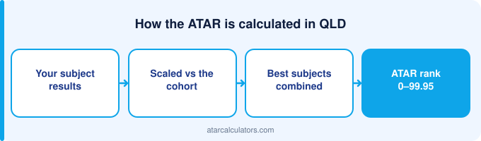

QLD ATAR cutoffs vary widely by course. Competitive degrees like medicine and law at the University of Queensland and QUT need an ATAR of 95 or above. Many arts, business and science courses sit between 65 and 80. A cutoff is the ATAR of the last student who got an offer last year, so it moves with demand.
Key takeaways
- Cutoffs vary by course, from the 60s to 99+.
- Medicine and law at top Queensland universities usually need 95+.
- Many arts, business and science courses sit between 65 and 80.
- A cutoff is the ATAR of the last student who got an offer, not a fixed pass mark.
- Cutoffs move each year with demand, so aim above the published figure.
- Adjustment factors can lower the ATAR you actually need.

What a QLD ATAR cutoff really means
A Queensland cutoff is the rank of the last student admitted, not a standard fixed in advance. QTAC publishes it after each round.
The range across Queensland courses
Queensland cutoffs range widely by course. The same degree at two Brisbane universities can differ, and neither number measures quality.
Competitive Queensland courses
The highest cutoffs go to courses like medicine, law, and some commerce and engineering degrees at the University of Queensland, QUT and Griffith. Direct-entry medicine usually needs 95 and above, plus an admissions test.
Law at leading Queensland universities is similar, often sitting in the high 90s. These courses have few places and many strong applicants, which keeps cutoffs high. See ATAR for medicine and ATAR for law.
Mid-range Queensland courses
Mid-range Queensland cutoffs cover most degrees, and they move most because applicant numbers shift there.
Why QLD cutoffs move each year
Queensland cutoffs move with demand. Note the state is still building history under the ATAR after the move from the OP — older comparisons use a scale that no longer exists.
Adjustment and bonus points
The ATAR you need is not always the raw cutoff. Many Queensland universities add adjustment factors, sometimes called bonus points, to your rank. These reward things like where you live, subjects you took, or difficulty during Year 12.
They lift your selection rank above your ATAR for that course. A student with an ATAR of 86 and five points is considered at 91. See how bonus points work.
Cutoff versus selection rank
Universities publish cutoffs as either an ATAR or a selection rank. A selection rank is your ATAR plus any adjustment points. So a course with a selection-rank cutoff of 90 might be reachable with an ATAR below 90, once your points are added.
Always check whether a cutoff is an ATAR or a selection rank. It changes how far your own ATAR needs to reach. Our selection rank calculator can help.
Adjustment schemes in depth
Adjustment factors, often called bonus points, are one of the most misunderstood parts of the cutoff picture, and understanding them can change which courses are realistic for you. They are points added to your ATAR after it is calculated, to form a selection rank, which is the figure a course actually compares against its cutoff. Because they are applied on top of the ATAR, a student whose ATAR falls a little short of a published cutoff may still reach it once their adjustments are counted.
Educational access and equity
The main equity route is an educational access scheme, which recognises circumstances that may have affected your study, such as financial hardship, illness, disability, or disruption during Year 12. Eligible students receive adjustment factors that raise their selection rank for participating courses. Some adjustments are applied automatically from information the admissions centre holds; others need an application with supporting evidence by a deadline, so it pays to check early whether you qualify.
Subject-based adjustments
Many Queensland universities award adjustments for studying particular subjects relevant to a course, such as a specified mathematics, science or language subject. These subject adjustments are set by each university and vary between them, so the lift available for a given subject at one university may differ at another. They reward students who took the subjects that prepare them for a course, and they can make a target course more reachable if you chose your subjects well.
Regional and other schemes
Some schemes recognise living or attending school in a regional or remote area, and universities run their own additional schemes from time to time. Because adjustments are capped, they improve your selection rank within a limit rather than without bound, so they bridge a modest gap rather than a large one. The practical approach is to find out which schemes you qualify for, add their likely points to your ATAR estimate, and compare that selection rank, not your bare ATAR, with each course’s cutoff.
Count your adjustments into your target. When you compare yourself with a course, use your selection rank, your ATAR plus the adjustments you expect, not your ATAR alone. It can move a borderline course into reach.
Check your QLD ATAR
Before you plan around cutoffs, get a sense of your own ATAR. Our QLD ATAR calculator estimates your ATAR from your subject results, using scaling.
Compare that estimate with the cutoff for your course, and you have a clear target for the rest of the year.
Cutoffs by field of study
Although cutoffs are set course by course, it helps to see the broad bands that different fields tend to fall into, because they frame what rank a direction of study usually asks for. Treat these as rough territory, not promises: every course sets its own cutoff, and the figures move each year with demand and places. The point is to know roughly where your target field sits so you can plan a realistic set of preferences.
Health and medical fields
The health fields span the widest range. Direct and provisional-entry medicine, dentistry and some allied-health degrees sit among the highest cutoffs in the state, commonly needing a rank in the high 90s together with an admissions test such as the UCAT and often an interview. Nursing, by contrast, is far more accessible, with many programs sitting in the 60s to 70s, and paramedicine, physiotherapy and pharmacy falling somewhere in between depending on the university and the year.
Law, business and commerce
Law at the leading Queensland universities is one of the higher-cutoff fields, often in the high 90s for single degrees and higher again for some double degrees. Business and commerce cover a very broad band, from competitive commerce degrees at research-intensive universities down to accessible business programs elsewhere, so a student interested in business has realistic options across a wide range of ranks.
Engineering, science and technology
Engineering and the sciences also range widely. Some specialised or highly sought engineering programs carry high cutoffs, while general science and many engineering degrees sit in the middle of the scale. Information technology and computing have grown in demand, which can push some programs up, but accessible options remain. Mathematics and science prerequisites matter as much as the rank in these fields.
Arts, education and the humanities
Arts, humanities, education and creative fields tend to sit in the more accessible bands, commonly in the 60s to 80s, though specific high-demand programs and some double degrees run higher. Education is a field where the state has at times set particular entry expectations, so check the current requirements for teaching degrees, which can include more than the rank alone.
Fields are territory, not a map. These bands tell you roughly where a direction of study sits, but you still plan around each specific course’s current cutoff and prerequisites, not the field average.
Cutoffs at the main QLD universities
Queensland universities publish through QTAC. Compare course structures, not just the numbers.
Guaranteed entry and early offers
Some Queensland universities publish guaranteed ranks. These are commitments rather than records of demand.
How to read a cutoff correctly
Read a Queensland cutoff as history. And check the year carefully — anything phrased as an OP predates the current system.
Selection rank explained with an example
Your selection rank is your ATAR plus adjustment factors. It is what QTAC compares to a cutoff.
Prerequisites matter as much as cutoffs
The cutoff is not the only requirement. Many Queensland courses require specific subjects as prerequisites. A course might list an 85 cutoff, but if it also requires a subject you did not take, the cutoff alone will not get you in.
So check the prerequisites for the courses you want, ideally before you choose your subjects. Meeting the prerequisite is as important as reaching the cutoff.
Pathways if you miss the cutoff
If a Queensland cutoff is out of reach, pathways exist. TAFE and diploma routes feed into Queensland universities.
Why the same course varies between years
Queensland cutoffs vary because demand does. A lower cutoff reflects fewer applicants competing.
Hedging with your preference list
Hedge your QTAC preferences. You can list several, and ambitious ordering costs nothing.
Cutoff versus your real chances
Your chances at a Queensland course depend on your selection rank, not your raw ATAR. Adjustment factors sit between them.
Planning your preferences around cutoffs
Cutoffs are only useful if you turn them into a plan. The goal is a preference list that gives you the best shot at your most-wanted course while making sure you are not left without an offer if your rank lands lower than hoped. Because QTAC makes you the best offer it can from your ordered list, the order of your preferences is the single most important decision once you know roughly where your ATAR will fall.
Spreading your preferences
Build your list across your estimate band. Put your genuine first choice at the top, whatever its cutoff, because listing it first costs you nothing. Below it, add courses whose recent cutoffs sit around the middle of your band, and finish with one or two safer options, including a guaranteed-entry course where one exists, below your floor. This spread means a rise in a cutoff or a lower-than-hoped ATAR does not leave you empty-handed, while still keeping your top choice alive.
Aiming above the published figure
Because cutoffs move each year with demand, treat a published figure as a floor to clear with room to spare, not a target to hit exactly. Aiming a few points above the most recent cutoff gives you a buffer against an upward shift. For a course that has trended up in recent years, give yourself more margin; for one that has been stable or easing, a smaller buffer may be enough.
Revising when results arrive
Your pre-results list is built on an estimate; your post-results list should be built on your real ATAR. When results arrive, compare your actual selection rank with each course’s recent cutoff and adjust your preferences before the deadline, swapping an out-of-reach top choice for a realistic one, or adding a higher reach if your rank beat expectations. The preference-change window exists precisely for this, and using it well is one of the highest-value moves in the whole process.
The list is a living document. Lodge early to secure your place in the process, refine as your sense of your results sharpens, and revise decisively once your real ATAR is known, before the deadline.
Reading field bands without over-reading them
Broad field bands, the idea that health spans a wide range or that arts sits lower, are a useful first frame, but they can mislead if taken too literally. Within any field, individual courses scatter widely around the band, and a specific program at a specific university can sit far from the field’s typical figure. The band tells you roughly where to set your expectations before you look up the real numbers; it is never a substitute for the course’s own recent cutoff.
The safest way to use a field band is as a sorting tool. If a field sits well above your estimate band, you know to lean on pathways and safety options from the start. If it sits within reach, you know the field is realistic and can focus on comparing specific courses. Either way, you then move from the band to the actual cutoffs, because that is where the decision is really made.
Reading a course’s trend over recent years
A single year’s cutoff is a snapshot; a few years of ATAR-era figures tell a story. If a course’s cutoff has risen steadily, demand is building and you should give yourself a larger buffer above the latest figure. If it has been stable, a smaller buffer may be enough. If it has eased, the course may be becoming more accessible, though you still aim above the latest figure. Reading the trend, not just the latest number, is how experienced planners judge how much margin to leave.
Because Queensland’s ATAR-era history is still relatively short, trends are read with a little more caution than in longer-established states. Where only a couple of comparable years exist, treat the direction as tentative and give yourself a slightly more generous buffer. As more ATAR-era years accumulate, these trends become easier to read with confidence.
Buffer to the trend. Let the course’s recent direction set your margin: more buffer for a rising cutoff, less for a stable one, and always above the latest figure rather than at it.
Putting the cutoff picture together
A cutoff is one number in a larger picture, and the students who navigate it best are the ones who hold all the pieces at once. The cutoff tells you where demand landed last year. Your selection rank, your ATAR plus adjustments, is what that cutoff is compared against. Prerequisites and any admissions test are separate hurdles the cutoff does not capture. And your preference order decides which qualifying course you actually receive. Keep all four in view and the cutoff stops being intimidating and becomes a planning input.
The method follows naturally. Estimate your ATAR as a band, add the adjustments you expect, and you have a selection-rank band. For each target course, note its recent cutoff and type, its prerequisites and any test, and compare your band against it. Build a preference list that spreads across your band, your genuine first choice at the top, realistic options in the middle, and a safer or guaranteed-entry option below your floor. Then, when your real ATAR arrives, revise the list before the deadline. That sequence turns a wall of numbers into a clear, personal plan.
A final word of perspective
For all the attention cutoffs attract, they are an admissions threshold, not a verdict on your ability or a ceiling on your future. A cutoff reflects how many people wanted a course and how many places it had, nothing more. Clearing it opens one door; missing it points you to another. With pathways, transfer and later study all available, where you end up depends far more on what you do after you enrol than on the single number that let you in. Plan carefully, aim above the figure, know your routes, and keep the cutoff in proportion.
Four pieces, one plan. Cutoff, selection rank, prerequisites and preference order: hold all four together, and the cutoff becomes a tool you use rather than a hurdle you fear.
Reading a course entry page
When reading a Queensland table, check the year. The ATAR replaced the OP, so tables spanning the change are comparing different scales.
Common cutoff mistakes to avoid
A handful of cutoff misunderstandings cost students every year, and all are avoidable. The first is treating a cutoff as a fixed pass mark. It is not; it is the rank of the last student admitted last year, so it describes past demand, not a guaranteed threshold for this year. The second is comparing a bare ATAR with a selection-rank cutoff. If a course publishes a selection-rank cutoff, you must compare your ATAR plus adjustments, not your ATAR alone, or you will misjudge how far your rank needs to reach.
The third mistake is ignoring prerequisites. A cutoff tells you about the rank, but a course can require specific subjects regardless of rank, so a high ATAR does not rescue an application that is missing a prerequisite. The fourth is reading an old figure phrased as an OP as though it were an ATAR; the systems are different, so an OP-era number cannot be compared directly with an ATAR cutoff. The fifth is listing too few preferences, which leaves a student with no safety net if a cutoff rises.
The deadline mistake. Missing a preference-change deadline can leave you matched on a list you meant to update. Note the key dates early and revise your preferences in good time.
A cutoff glossary
A few terms recur whenever cutoffs are discussed. Keeping them straight makes every course page easier to read.
| Term | What it means |
|---|---|
| Cutoff | The rank of the last student who received an offer to a course in a given round, published after the fact. |
| ATAR | Your Australian Tertiary Admission Rank, from 0.00 to 99.95, calculated by QTAC. |
| Selection rank | Your ATAR plus any adjustment factors, which is what a course compares against its cutoff. |
| Adjustment factors | Points added to your ATAR for eligible circumstances or subjects, also called bonus points. |
| Prerequisite | A subject or result a course requires regardless of your rank. |
| Guaranteed entry | A rank a university commits to admit at, assuming other requirements are met and places last. |
| Offer round | A stage in which QTAC makes offers; cutoffs can differ between rounds. |
A cutoff checklist before you apply
A short checklist keeps the cutoff picture under control. For each target course, note its most recent cutoff and whether that figure is an ATAR or a selection rank. Check its prerequisites and any admissions test or interview. Work out your own selection rank, your estimated ATAR plus the adjustments you expect, and compare it with each course’s cutoff. Build a preference list that spreads across your estimate band, first choice first, with a safer option below your floor. Note the key dates, especially the preference-change deadline. With those in place, you are reading cutoffs as the planning tool they are, rather than as a verdict.
Common questions
What ATAR do I need for university in QLD?
It depends on the course. Many arts, business and science degrees sit between 65 and 80, while competitive courses like medicine and law at UQ and QUT usually need 95 or above.
What are the lowest-ATAR courses in QLD?
Many courses at Queensland universities accept students in the 60s, especially through pathway programs and with adjustment factors. Regional campuses often have lower cutoffs than metropolitan ones.
Do QLD unis give adjustment or bonus points?
Yes. Many Queensland universities add adjustment factors to your rank for things like your location, subjects, or difficulty faced during Year 12. These lift your selection rank above your ATAR for that course.
Is the cutoff the same as the average ATAR of students?
No. A cutoff is the ATAR of the last student who received an offer. The average ATAR of students in the course is usually higher, because many entered well above the cutoff.
Do Queensland universities offer guaranteed entry?
Yes. Several Queensland universities publish guaranteed-entry ATARs for some courses, so reaching the stated ATAR guarantees an offer. Many also run early-offer schemes before your ATAR is released.
Do I need specific subjects for QLD university courses?
Often, yes. Many Queensland courses require specific subjects as prerequisites. Meeting the prerequisite matters as much as reaching the cutoff, so check requirements before choosing your subjects.
What is an ATAR cutoff in Queensland?
A cutoff is the rank of the last student who received an offer to a course in a given round. QTAC publishes it after the fact, so it describes last year’s demand rather than a fixed pass mark.
Is a cutoff a guaranteed entry mark?
No. A cutoff is a record of where demand landed last year, not a promise for this year. It moves with applicant numbers and places, so treat it as a guide and aim above it.
Why do cutoffs change each year?
Because they reflect demand and the number of places. A more popular course, or fewer places, pushes the cutoff up; the reverse pushes it down. Last year’s figure is a guide, not a guarantee.
What ATAR do I need for medicine in Queensland?
Direct and provisional-entry medicine usually needs a rank in the high 90s, plus an admissions test such as the UCAT and often an interview. Check each university’s current requirements, which can change.
What ATAR do I need for law in Queensland?
Law at the leading Queensland universities is often in the high 90s for single degrees, and higher for some double degrees. Check each course’s recent cutoff, as it varies by university and year.
What ATAR do I need for nursing in Queensland?
Nursing is far more accessible than medicine, with many programs sitting in the 60s to 70s. Cutoffs vary by university and year, so check the specific program’s recent figure.
What is a selection rank?
Your selection rank is your ATAR plus any adjustment factors. It is the figure a course compares against its cutoff, so it can be higher than your bare ATAR.
Is a cutoff an ATAR or a selection rank?
It can be either. Some courses publish cutoffs as a raw ATAR and some as a selection rank. Always check which, because it changes how far your own ATAR needs to reach.
Can adjustment factors lower the ATAR I need?
Yes. Adjustment factors are added to your ATAR to form your selection rank, so a course may be reachable with an ATAR below its selection-rank cutoff once your points are counted.
What are bonus points?
Bonus points, or adjustment factors, are points added to your ATAR for eligible circumstances or subjects. They lift your selection rank above your ATAR for participating courses.
Do all Queensland courses have cutoffs?
Most ATAR-based courses publish a cutoff, but entry can also depend on prerequisites, tests or interviews. Some courses admit through guaranteed-entry schemes or pathways rather than a demand-driven cutoff.
How high are the top Queensland cutoffs?
The highest cutoffs, for courses like medicine and law at the leading universities, sit in the high 90s. These courses have few places and many strong applicants, which keeps cutoffs high.
What cutoff do most courses have?
Many arts, business and science courses sit between the 60s and 80s. Mid-range courses cover most degrees and move most, because applicant numbers shift there.
Does a higher cutoff mean a better course?
No. A cutoff reflects demand and places, not quality. The same degree at two universities can have different cutoffs, and neither number measures how good the course is.
Should I aim for exactly the cutoff?
No. Aim above the published figure, because cutoffs move each year with demand. A buffer of a few points protects you against an upward shift.
Where does QTAC publish cutoffs?
QTAC publishes cutoff information after offer rounds, and the universities publish course entry information. Compare the specific course’s recent figures rather than relying on general impressions.
Can a cutoff differ between universities for the same degree?
Yes. The same degree at two Queensland universities can have different cutoffs, reflecting different demand and places. Compare the specific course at each university you are considering.
Do double degrees have higher cutoffs?
Often, yes. Double degrees can carry higher cutoffs than their single-degree components, because they combine demand. Check the specific double degree’s recent figure.
Is there a minimum ATAR for any Queensland university?
Some courses and guaranteed-entry schemes set minimum ranks, but there is no single statewide minimum. Pathways admit students below typical cutoffs, so the minimum depends on the course and route.
Do cutoffs include adjustment factors?
A published cutoff is often a selection rank, which already reflects the point at which selection ranks, including adjustments, reached the last place. Check whether a figure is an ATAR or a selection rank.
How do I compare my ATAR with a cutoff?
Compare your selection rank, your ATAR plus the adjustments you expect, with the course’s cutoff, and check whether the cutoff is an ATAR or a selection rank. That tells you how far your rank needs to reach.
Can I get into a course below its cutoff?
Sometimes, through adjustment factors that lift your selection rank, or through a pathway. The listed cutoff is last year’s threshold, and your adjustments can bridge a small gap.
What if my ATAR is just below a cutoff?
Count your adjustment factors into your selection rank, consider pathways, and list the course with realistic options below it. A small gap can often be bridged by adjustments or a later round.
Do cutoffs differ between offer rounds?
Yes. Cutoffs can shift between rounds as places fill. A course may have a slightly different threshold in a later round depending on remaining places and demand.
Is the first-round cutoff the one to watch?
The main-round cutoff is the most-cited figure, but later rounds can differ. Use the main-round cutoff as your main guide and remember later rounds can bring opportunities.
Can prerequisites matter more than the cutoff?
Yes. A course can require specific subjects regardless of rank, so a high ATAR does not rescue a missing prerequisite. Check prerequisites as carefully as the cutoff.
What is guaranteed entry?
A rank a university commits to admit at, assuming you meet other requirements and places last. Unlike a cutoff, it is a promise rather than a record of demand, giving more certainty.
Does meeting a cutoff guarantee a place?
Not necessarily, because the cutoff can rise with demand. A guaranteed-entry rank is a firmer commitment. Meeting last year’s cutoff is a strong position but not a certainty.
How do I use cutoffs to plan?
Compare your selection rank with each target course’s recent cutoff, aim above the figure, and build a preference list across your estimate band with a safer option below your floor.
Where can I estimate my own ATAR?
A Queensland ATAR calculator estimates your ATAR from your subject results using scaling. Compare that estimate, plus adjustments, with the cutoffs for your target courses.
How should I order my QTAC preferences?
List your genuine first choice at the top, whatever its cutoff, then courses around the middle of your estimate band, and a safer or guaranteed-entry option below your floor. QTAC offers your highest qualifying preference.
Does ranking a course lower hurt my chances of it?
No. QTAC offers your highest qualifying preference, so ranking reflects what you want most and never penalises a lower-ranked course.
How many preferences should I list?
Enough to spread across your estimate band: your top choice, middle options around your estimate, and a safety option below your floor. Check QTAC’s current preference limits when you apply.
Will a safety option cost me my top choice?
No. QTAC makes you the best offer it can from your ordered list, so a safety option lower down never displaces a higher preference you qualify for.
Should I list a reach course first?
Yes. List your most-wanted course first even if its cutoff is above your estimate, because listing it first costs nothing and QTAC will offer it if you qualify.
Can I change my preferences after applying?
Yes, up to the deadlines QTAC sets, including after your ATAR is released. Updating your preferences lets you respond to your real rank rather than your estimate.
When should I revise my preferences?
When your real ATAR arrives, before the preference-change deadline. Compare your selection rank with each course’s cutoff and adjust, swapping an out-of-reach top choice for a realistic one.
What if I only list one preference?
You risk missing out if you do not meet that course’s cutoff. Listing a spread across your estimate band protects you without costing you your top choice.
Should I include a guaranteed-entry course?
Yes, as a lower preference. It provides an assured option if your higher preferences miss, and it costs nothing to list below your reaches.
How do I spread preferences across my band?
Put your first choice at the top, add courses whose cutoffs sit around the middle of your estimate band, and finish with safer options below your floor. This covers the range your ATAR might land in.
Does the order matter more than the number?
The order is crucial, since QTAC offers your highest qualifying preference. The number matters too, in that a spread protects you, but order is the single most important decision.
Can I mix universities in my preferences?
Yes. Your QTAC list can mix courses from different universities in any order. QTAC matches you to the highest preference you qualify for across the whole list.
What if two of my preferences would both make an offer?
QTAC offers you the higher of the two, not both. That is why order matters: your top qualifying preference is the one you receive.
Should my preferences change after results?
Yes. Your pre-results list is built on an estimate; after results, rebuild it on your real selection rank before the deadline. This is one of the highest-value moves in the process.
Can I list a pathway course among my preferences?
Often yes. You can list some diploma or pathway courses alongside degrees in your preferences. Check which are available through QTAC and include a pathway as a safety net if useful.
How do I avoid an empty-handed result?
Include at least one safer or guaranteed-entry option below your floor, so that even if your reaches miss and a cutoff rises, you still receive an offer.
Does listing more preferences improve my chances?
It protects you against missing out, by covering more of your estimate band. It does not improve your chance for any single course, but it ensures you have a realistic option.
Can I reorder preferences between rounds?
Yes, up to each round’s deadline. Reordering lets you respond to offers and to your real rank. Keep your list current to benefit from later rounds.
Should my first preference be realistic or aspirational?
Aspirational is fine for your first preference, since listing it first costs nothing. Make your middle and lower preferences realistic so you are protected if the reach misses.
What if my estimate changes after I set preferences?
Update your preferences to match. Your list should reflect your current best estimate, and you revise it decisively once your real ATAR is known.
Does QTAC tell me which preference I will get?
QTAC makes you the best offer it can from your list in each round. You find out your offer when the round is released; you do not know in advance which preference it will be.
Can I list the same course at two universities?
Yes. If you want a similar course at more than one university, list each as a separate preference in your order. QTAC treats them as distinct courses.
How do adjustments affect my preference planning?
Add your expected adjustments to your estimate to get a selection-rank band, then plan your preferences around that band. Adjustments can bring courses just above your ATAR into reach.
What is the biggest preference mistake?
Listing too few preferences or no safety option, which can leave you empty-handed if a cutoff rises. A spread with a safety net below your floor avoids this.
Can I get advice on my preference order?
Yes. Your careers adviser and QTAC can help you order preferences sensibly across your estimate band. It is worth a second opinion before the deadline.
Should I drop a course I am unlikely to get?
Not if you genuinely want it, since listing it first costs nothing. Keep a reach at the top and ensure realistic options sit below it.
How do early offers affect my preferences?
An early, conditional offer can give certainty, but in most cases you can accept it and still be considered for higher preferences. Read the conditions and keep your preferences current.
Can I plan preferences before I know my ATAR?
Yes, using your estimate band. Lodge an early list, then revise it decisively once your real ATAR is known, before the deadline. The early list secures your place in the process.
Do preferences carry to next year?
Applications are tied to an admissions cycle. If you apply again next year, check what carries over and what you need to resubmit.
Where do I manage my preferences?
Through your QTAC account, where you lodge and reorder preferences up to the deadlines. Check QTAC’s key dates for when each round’s preferences close.
What was the OP and how does it relate to cutoffs?
The OP was Queensland’s former rank, from 1 to 25 with 1 the best, used until 2019. Old cutoffs phrased as an OP predate the ATAR and cannot be compared directly with current ATAR cutoffs.
Can I convert an OP cutoff to an ATAR cutoff?
There is no exact conversion, because the systems rank differently. Indicative comparisons exist, but rely on current ATAR or selection-rank cutoffs rather than converting an OP figure.
Why do some old cutoff figures look low?
They may be OP figures, where a low number was good. An OP cutoff of 5, for example, is not an ATAR of 5. Check whether an old figure is an OP before comparing.
When did Queensland switch to ATAR cutoffs?
Queensland issued its first ATARs in 2020, so cutoffs from 2020 onward are on the ATAR scale. Earlier figures use the OP and are not directly comparable.
Is cutoff history shorter in Queensland?
Yes. Because the ATAR began in Queensland in 2020, there are fewer years of ATAR-era cutoff history than in states that adopted it earlier. Use the ATAR-era figures that exist.
Can I compare Queensland cutoffs with interstate ones?
Loosely. The ATAR is national, so ranks are comparable, but demand and places differ by state and university. Use Queensland cutoffs for Queensland courses.
Why might an old course page still show an OP?
Some older or cached pages may reference OP-era figures. Treat any OP figure as historical and look for the current ATAR or selection-rank cutoff instead.
Does the switch to ATAR change how cutoffs behave?
The underlying logic is the same: cutoffs reflect demand and places. The ATAR is a finer, national rank, so cutoffs are now expressed on the 0.00 to 99.95 scale rather than in OP bands.
Are ATAR cutoffs more precise than OP ones?
Yes. The ATAR’s fine 0.05 steps give more precise cutoffs than the OP’s 25 bands, so small differences between courses and years are visible.
Can I use pre-2020 cutoffs at all?
Only as rough historical context, and knowing they are OP figures. For planning, use ATAR-era cutoffs, since the OP scale no longer exists and cannot be compared directly.
Did cutoffs reset when the ATAR began?
Cutoffs were re-expressed on the ATAR scale from 2020. They continued to reflect demand and places, but on the new scale, so early ATAR-era figures are the baseline to use.
How do I know if a figure is an OP or an ATAR?
An OP is a whole number from 1 to 25 where low is good; an ATAR is from 0.00 to 99.95 where high is good. The scale and direction tell you which system a figure uses.
Should I worry about the short ATAR history?
No, but give yourself a sensible buffer, since fewer years of ATAR-era trend data make a course’s movement a little harder to read. Use the figures that exist and aim above them.
Do universities still reference the OP?
Rarely, and only for historical context. Current admissions use the ATAR and selection rank. If you see an OP reference, treat it as legacy information.
Can an older sibling’s OP guide me?
Not directly, since the OP and ATAR are different systems. An older sibling’s OP experience does not translate into an ATAR cutoff. Use current ATAR figures for your planning.
Why did Queensland change systems?
To align with the rest of the country, where the ATAR is standard, and to provide a finer, nationally comparable rank than the OP’s 25 bands. The change took effect in 2020.
Are current cutoffs settled after the change?
Cutoffs continue to move with demand each year, as they always did. The ATAR era is established, so current cutoffs behave normally; just note the shorter run of comparable history.
Can I trust a cutoff from 2020 or 2021?
Those are early ATAR-era figures and are usable, but demand may have shifted since. Prefer the most recent figure and use earlier ATAR-era ones to judge the trend.
Does the OP-to-ATAR change affect prerequisites?
Prerequisites are set by courses and have continued through the change. Check current prerequisites, which are independent of whether a cutoff is expressed as an OP or an ATAR.
Is a high ATAR cutoff like a low OP cutoff?
In effect, a high ATAR cutoff and a low OP cutoff both signal a competitive course, but the numbers are not interchangeable. Use the ATAR figure directly rather than translating.
How do I explain the change to family used to the OP?
Say Queensland swapped the OP’s 1-to-25 bands for the national ATAR from 0.00 to 99.95 in 2020, that high is now good, and that old OP cutoffs cannot be compared directly with ATAR ones.
Can I find both OP and ATAR history for a course?
Some sources show historical OP figures and current ATAR figures separately. Use the ATAR-era figures for planning and treat OP figures as historical only.
Does the shorter history make estimates less reliable?
Scaling, not cutoff history, is the main unknown in an estimate. The shorter cutoff history mainly affects how confidently you read a course’s trend, so give a sensible buffer.
Will more ATAR-era history make cutoffs easier to read?
Yes, over time. As more ATAR-era years accumulate, course trends become clearer. For now, use the figures that exist and aim above them with a buffer.
Is the ATAR here to stay in Queensland?
Yes. The ATAR has been Queensland’s rank since 2020 and continues for subsequent cohorts, aligning the state with the national system. It is the established approach.
Should I ignore OP figures entirely?
For planning, effectively yes, since they are on a scale that no longer exists. Use them only as historical context, and rely on current ATAR and selection-rank cutoffs.
Do cutoffs behave differently under the ATAR?
The behaviour is the same in principle, reflecting demand and places, but on a finer scale. The main practical difference is precision and national comparability.
Can I compare a 2019 OP cutoff with a 2024 ATAR one?
No, not directly, because they use different scales. The 2019 figure is an OP; the 2024 figure is an ATAR. Use the ATAR figure and treat the OP one as historical.
How many years of ATAR cutoffs are there now?
Several, since the ATAR began in Queensland in 2020. Enough to see trends for most courses, though fewer than in longer-established ATAR states. Use the recent figures.
Where do I find ATAR-era cutoffs?
On QTAC and the universities’ current course information, which publish ATAR-era cutoffs after offer rounds. Prefer the most recent figures and check the year on each.
Does a cutoff tell me my chances of getting in?
Partly. A cutoff tells you the lowest admitted rank last year, which helps you judge whether your selection rank is competitive, but your actual chance also depends on this year’s demand.
If I beat the cutoff, am I guaranteed a place?
Not necessarily, because the cutoff can rise with demand. Beating last year’s cutoff is a strong position, but a guaranteed-entry rank is the firmer commitment.
What does it mean to be at the cutoff?
Being at the cutoff means your rank matches the lowest admitted last year, which is borderline for this year. Aim above it, since the cutoff can rise, and count your adjustments.
Does a higher rank than the cutoff help beyond entry?
It can help with competitive scholarships, some selective pathways and certain double degrees, and it gives a buffer against the cutoff rising. For basic entry, clearing the cutoff with margin is the aim.
How much above the cutoff is safe?
Enough to buffer against an upward shift, which depends on the course’s recent trend. A few points is a sensible buffer; give more for a course trending up.
Can I get in below the cutoff with adjustments?
Yes. If a course publishes a selection-rank cutoff, your ATAR plus adjustments is compared, so an ATAR below the figure can still reach it once your points are added.
Does demand change my chances year to year?
Yes. A surge in applicants or a cut in places can raise a cutoff, while the reverse lowers it. That is why last year’s cutoff is a guide, not a guarantee of this year’s threshold.
Is a cutoff the same as my probability of entry?
No. A cutoff is a threshold from last year, not a probability. Your chance depends on your selection rank relative to this year’s demand, which the cutoff only approximates.
How do I judge if a course is a reach or safe?
Compare your selection-rank band with the course’s recent cutoff. Above the cutoff with margin is safe-ish; around it is a reach; well below signals a pathway. Plan accordingly.
Can I improve my chances after results?
Yes, by revising your preferences on your real rank, counting adjustments, and considering later rounds and pathways. Using the preference-change window well is a high-value move.
Does listing a course higher improve my chance of it?
It ensures QTAC offers it if you qualify, since it offers your highest qualifying preference. Listing it higher does not lower its cutoff, but it means you receive it over lower preferences.
What if my rank is far below the cutoff?
Lean on pathways such as preparation programs, VET and transfer, and list the course as a reach with realistic options below. A large gap is better bridged by a pathway than by hoping the cutoff falls.
Can a cutoff fall enough for me to get in?
Cutoffs can fall if demand drops or places increase, but you cannot rely on it. Plan around the published figure and your selection rank, not on a hoped-for fall.
Does meeting prerequisites improve my chances?
Meeting prerequisites keeps you eligible; missing one rules you out regardless of rank. So prerequisites are necessary for any chance, though they do not raise your rank.
How do later rounds affect my chances?
Later rounds fill remaining places and can bring an offer if a spot opens, sometimes at a slightly different cutoff. Keeping your preferences current lets you benefit from them.
Is a borderline rank worth a competitive course?
List it as a reach if you want it, since listing it first costs nothing, but add realistic options below. A borderline rank may get in if the cutoff eases or your adjustments help, but plan for both outcomes.
Do scholarships depend on beating the cutoff?
Some scholarships use rank as a criterion, often above the cutoff, while others use different measures. Check each scholarship’s rules, which are set by the university or provider.
Can strong extracurriculars offset a low rank?
For most ATAR-based courses, no; selection is on rank and prerequisites. Some courses use portfolios, interviews or experience-based entry where broader strengths count. Check the course’s process.
How do I know this year’s demand?
You cannot know it exactly in advance. Use recent trends and a buffer above the cutoff to account for a possible rise. QTAC and the universities can offer general guidance.
Does my chance differ between universities for one course?
Yes, because demand and cutoffs differ. The same course at two universities can be a reach at one and safer at the other. Compare the specific course at each.
Can I rely on being just above the cutoff?
It is risky, since the cutoff can rise. Treat being just above as borderline, aim higher, and ensure realistic options sit below in your preferences.
Does a cutoff account for adjustments already?
A selection-rank cutoff reflects the point where selection ranks, including adjustments, reached the last place. An ATAR cutoff does not. Check which type a figure is.
How do I maximise my chances across preferences?
Spread your preferences across your estimate band, first choice first, with a safety option below your floor. This maximises your chance of a good offer without risking an empty-handed result.
Can I be confident with a guaranteed-entry course?
Yes, when you meet the guaranteed rank and other requirements and places last. A guaranteed-entry course low on your list gives the firmest chance of an offer.
Does a high cutoff mean low chances for everyone?
It means the course is competitive, so only high ranks are admitted. Your chance depends on whether your selection rank is among them, plus this year’s demand.
Should I apply even if my chances look low?
Yes, if you want the course, since listing it costs nothing and a later round or a cutoff easing could help. Pair it with realistic options and pathways.
How do pathways change my overall chances?
They add routes beyond the cutoff, so your chance of entering a field is higher than the cutoff alone suggests. A pathway can reach what a borderline ATAR cannot.
Can I ask about my chances directly?
Universities and QTAC can give general guidance on how competitive a course is and what to expect, though they cannot promise an outcome. Their advice helps you plan realistically.
Is clearing the cutoff the main goal?
Clearing it with a buffer, meeting prerequisites, and listing preferences well are the goals. The cutoff is one hurdle; prerequisites and preference order matter just as much.
Where do I get the best read on my chances?
Combine your selection-rank estimate with recent cutoffs and trends, and seek guidance from your careers adviser and the universities. Together these give the most realistic read.
When are Queensland ATARs and cutoffs released?
ATARs are released by QTAC in mid-December, and cutoffs are published after each offer round. Check QTAC’s key dates for the exact timing each year.
When do offer rounds happen?
Major offer rounds fall in December and January, with later rounds following. QTAC publishes the exact offer-round dates each year, so check its calendar.
When is the preference-change deadline?
Preference changes for the main round close close to the ATAR release in December. Review and update your preferences before this deadline so you are matched on the list you intend.
Can I change preferences after seeing my ATAR?
Yes, up to the deadline before an offer round. This is exactly when to swap estimates for choices based on your real rank and the published cutoffs.
Are cutoffs known before I set preferences?
You set preferences using last year’s cutoffs as a guide, since this year’s are not known until after offers. That is why you aim above the published figure and spread your preferences.
When are cutoffs for this year published?
After each offer round, since a cutoff is the rank of the last student admitted in that round. You plan with last year’s cutoffs and learn this year’s after offers.
Do I apply before or after results?
Applications open before results, so you lodge preferences while finishing Year 12 and refine them when your ATAR is released. Some universities also make early offers before results.
When should I lodge my QTAC application?
By the on-time deadline, well before results, then refine your preferences before each round’s deadline. Lodging early secures your place in the process.
Can I apply late?
Late applications are usually possible, though they can miss early rounds and cost more. Apply by the on-time deadline where you can, and check QTAC’s late-application rules.
When do early offers come out?
Some universities make early offers from around the middle of the year, before final ATARs, often conditional. The exact timing varies by scheme; check each university’s early-offer dates.
How soon after the ATAR do offers come?
Main-round offers follow the ATAR release within days, typically in December, with later rounds into January. QTAC publishes the exact dates each year.
Can I respond to an offer after the deadline?
You risk losing the offer if you miss its response deadline. Note each offer’s deadline and respond in time; if you miss it, contact the university promptly.
When do later offer rounds close?
Later rounds run into January and sometimes February, each with its own preference and response deadlines. Check QTAC’s calendar for the dates of each round.
Should I wait for cutoffs before applying?
No. Apply with last year’s cutoffs as a guide and refine your preferences when your ATAR is released. This year’s cutoffs come after offers, so you cannot wait for them.
When are the main universities’ cutoffs comparable?
After the main offer round, when QTAC and the universities publish the round’s cutoffs. Those become part of the history you use to plan the following year.
Can I track cutoffs during the rounds?
Cutoffs are published after rounds, not during them. You receive your offer when a round is released; the cutoffs that produced it are published alongside or after.
Do I need to do anything on results day?
Read your ATAR, compare it with your target courses’ cutoffs, and update your preferences before the deadline if needed. Then wait for the offer round.
When is the best time to finalise preferences?
After your ATAR is released and before the main-round preference deadline. That is when you have your real rank and can match it against the published cutoffs.
Can early offers arrive before cutoffs are known?
Yes. Early, conditional offers are made before final ATARs and cutoffs, based on earlier results or other criteria. They still depend on you meeting the conditions.
How far ahead should I plan around dates?
Note QTAC’s key dates as soon as they are published, well before results. Knowing the application, preference-change, offer and response dates keeps you from missing a deadline.
When do I enrol after an offer?
After accepting an offer, you enrol with the university within the period it specifies. Accept by the offer deadline, then follow the enrolment steps promptly.
Can I defer after accepting an offer?
Many courses allow deferral so you can start the following year. Check the course’s deferral policy and apply through the university after accepting.
What if my ATAR is released and I am unsure?
Compare your rank with the cutoffs, seek advice from your careers adviser or QTAC, and update your preferences before the deadline. It is better to ask than to miss the window.
Do cutoffs from this year help me next year?
If you reapply, this year’s cutoffs become part of the history you use to plan. For a current application, you rely on last year’s cutoffs until this year’s are published.
When are scholarship deadlines?
Scholarship deadlines are set by the universities and providers, often separate from the QTAC timeline. Check each scholarship’s deadline, which can fall before or around results.
Can I apply for adjustment schemes late?
Some adjustments apply automatically; others need an application by a deadline, often around results. Check each scheme’s deadline early so you do not miss it.
When should I register for an admissions test?
Tests such as the UCAT are often sat well before results, with their own registration deadlines earlier in the year. Check the test’s dates as soon as you know you need it.
How do dates differ for non-school leavers?
Non-school-leaver and interstate applicants follow QTAC’s deadlines, which can differ in detail. Check QTAC’s information for your applicant type and note the relevant dates.
What is the single most important date?
The preference-change deadline before the main round, since missing it can leave you matched on a list you meant to update. Note it early and revise your preferences in good time.
Where are the official key dates?
On QTAC’s website, which publishes the current year’s key dates for applications, preference deadlines, results and offer rounds. Rely on these rather than last year’s calendar.
What is the single most important thing about cutoffs?
That a cutoff is last year’s lowest admitted rank, not a fixed pass mark. Treat it as a guide to demand, compare it against your selection rank, and aim above it.
Is the cutoff the only thing that matters for entry?
No. Prerequisites, any admissions test or interview, and your selection rank all matter. A high rank does not rescue a missing prerequisite, and some courses use more than the rank.
How do I plan realistically around cutoffs?
Estimate your ATAR, add expected adjustments for a selection-rank band, compare it with each target course’s recent cutoff, and build a preference list across the band with a safety option below.
Should I aim for the cutoff or above it?
Above it. Cutoffs move each year with demand, so aim a few points above the published figure to buffer against an upward shift.
What if I just miss a cutoff?
Count your adjustments, consider later rounds, and look at pathways or a related course to transfer from. A near miss often has a route, so it is not the end.
How do adjustments change my cutoff planning?
Add your expected adjustments to your ATAR estimate to get a selection-rank band, then compare that with cutoffs. Adjustments can bring courses just above your ATAR into reach.
Do prerequisites override a good cutoff position?
Yes. Missing a prerequisite can rule you out even with a rank above the cutoff. Check prerequisites as carefully as the cutoff and plan your subjects to meet them.
Will listing a safety option hurt my top choice?
No. QTAC offers your highest qualifying preference, so a safety option lower down never displaces a higher preference you qualify for.
Can I get into university if I miss my cutoffs?
Yes. Pathways such as preparation programs, VET, diplomas, the STAT and transfer admit students who miss cutoffs. About half of Queensland Year 12 students enter without an ATAR.
How do I compare courses across universities?
Compare the specific course’s cutoff, prerequisites, structure and outcomes, not just the headline number. The best fit depends on more than the cutoff.
Is a selection-rank cutoff easier to reach than an ATAR one?
A selection-rank cutoff counts your adjustments, so it can be reachable with an ATAR below the figure. Always check whether a cutoff is an ATAR or a selection rank.
What if a course page shows an OP figure?
That predates the ATAR and cannot be compared directly. Look for the current ATAR or selection-rank cutoff instead, and treat the OP figure as historical.
How do I use an ATAR estimate with cutoffs?
Treat your estimate as a band, add adjustments for a selection-rank band, and compare it with each course’s recent cutoff. Plan preferences across the band, not around one number.
Should I rely on last year’s cutoff?
Use it as a guide, not a promise. Cutoffs move each year, so aim above the figure and build a spread of preferences to protect against a rise.
Can a cutoff rise a lot in one year?
It can move noticeably if demand surges or places are cut, which is why you aim above the figure and keep realistic options below your reach.
How do I know if my course is a reach?
Compare your selection-rank band with its recent cutoff. Well above is safer, around it is a reach, and well below signals a pathway. Plan your preferences accordingly.
Do guaranteed-entry schemes help?
Yes. A guaranteed rank is a commitment, firmer than a cutoff. Listing a guaranteed-entry course below your reaches gives an assured option if higher preferences miss.
What is the biggest planning mistake?
Listing too few preferences or no safety option, which risks an empty-handed result if a cutoff rises. A spread with a safety net below your floor avoids this.
Can I improve my position after results?
Yes, by revising your preferences on your real selection rank before the deadline, counting adjustments, and considering later rounds and pathways. The preference-change window is high-value.
Does the cutoff tell me my chances exactly?
No. It tells you last year’s lowest admitted rank, which helps you judge whether your selection rank is competitive, but your chance also depends on this year’s demand.
How far above a cutoff is safe?
Enough to buffer against an upward shift, which depends on the course’s recent trend. A few points is sensible; give more for a course trending up.
Should I check prerequisites before the cutoff?
Check both, early. A reachable cutoff is no use if you lack a prerequisite you can no longer take, so plan your subjects around prerequisites from Year 10 or 11.
Can adjustments get me into a competitive course?
They can bridge a modest gap within their cap, but very competitive courses may limit them and use tests and interviews. For a large gap, a pathway or graduate route is a better plan.
Is it worth listing a dream course I may miss?
Yes, at the top, since listing it first costs nothing and QTAC offers it if you qualify. Pair it with realistic options and a safety net below.
How do I keep perspective on cutoffs?
Remember a cutoff is one threshold from last year, that pathways exist, and that where you finish depends far more on what you do next than on clearing one cutoff.
What should I do first?
List your target courses, note each cutoff’s type and year, check prerequisites, estimate your selection rank, and build a spread of preferences across your band with a safety option below.
Can a careers adviser help with cutoff planning?
Yes. A careers adviser can check cutoffs, prerequisites and your preference order, and flag gaps early. It is worth a second opinion before the deadline.
Where is the most reliable cutoff information?
On QTAC and each university’s course pages, updated each year. They are more reliable than third-party lists or older figures for cutoffs, prerequisites and requirements.
Can parents help with cutoff planning?
Yes, with the practical steps: noting each course’s cutoff, prerequisites and deadlines, and helping the student build a spread of preferences. The choice should remain the student’s.
How can parents best support cutoff decisions?
Understand that a cutoff is last year’s lowest admitted rank, not a pass mark, encourage aiming above it, and help the student spread preferences and know the pathways. Support beats pressure.
Should parents choose the course?
No. Parents can help weigh options, but the course and preferences should reflect the student’s goals and abilities. A careers adviser can provide balanced guidance.
What if my child’s rank misses the cutoff?
Treat it as a detour, not a dead end. Later rounds, adjustments and pathways such as preparation programs, VET and transfer lead into the same degrees. Help plan the next step calmly.
How do I explain selection rank to my child?
Explain that the selection rank is their ATAR plus adjustment factors, and that a course compares the selection rank, not the bare ATAR, against its cutoff. Adjustments can bridge a small gap.
Should we rely on the calculator’s number?
Treat it as a range, not a promise, because scaling is not published before results. Use it to see where the student’s rank is tracking against target cutoffs, not to fix expectations on one number.
How involved should parents be on results day?
Be present and calm. Help read the ATAR, compare it with the target cutoffs, and check whether to update preferences before the deadline. Then let the process run.
What if my child wants a very competitive course?
Support listing it first, meeting its prerequisites and any test, and adding realistic options below. If the cutoff is beyond reach, help identify a pathway or graduate route into the field.
Is it worth paying for tutoring to lift the rank?
That is a family decision. Targeted help in a student’s weaker counted subjects can lift results, but wellbeing and consistent study matter too. Focus any help where it moves counted subjects.
How do parents find reliable cutoff information?
On QTAC and each university’s course pages, updated each year. These are more reliable than third-party lists or older figures for cutoffs, prerequisites and requirements.
Should we visit open days?
Yes. Open days help the whole family judge course fit beyond the cutoff, so the preference list reflects courses the student genuinely wants.
What if my child is set on one university?
Encourage listing courses, not just a university, and including options across universities as a safety net. QTAC matches to the highest preference qualified for, so breadth protects the student.
How do I help with prerequisites?
Check your child’s target courses’ prerequisites against their subjects early, and flag any gap while subjects can still be changed. A missing prerequisite is harder to fix than a borderline rank.
What if my child wants a gap year?
That is fine. The ATAR does not expire, and the student can apply the following year, sometimes with new credentials. A gap year does not disadvantage later study.
Should parents track the deadlines?
Sharing responsibility for the key dates helps, since a missed preference-change or offer-response deadline is one of the few avoidable setbacks. Note them together early.
How do I support a child entering through a pathway?
Treat the pathway as a legitimate route, not a lesser one. Many pathway students do as well as ATAR entrants. Encourage engagement with the program and its support services.
What if siblings compare ranks?
Discourage direct comparison, since what matters is whether each student’s rank and requirements meet their own goals. Different courses need different ranks.
Can parents attend information sessions?
Schools and universities run information sessions for parents and students, and QTAC provides materials aimed at families. Attending helps you support the student’s decisions.
How do I keep the year calm at home?
Keep perspective: a cutoff is one threshold, and pathways exist. Support steady study and wellbeing, and avoid turning every result into a verdict.
What if my child misses a prerequisite?
Help find a bridging or preparation route, or a pathway, and contact the university about options. A missing prerequisite is a problem to solve, not a closed door.
Should we accept the first offer?
Read it with the student. In most cases they can accept it and still be considered for a higher preference later, so the first offer is usually a floor, not the final word.
How do I talk about a disappointing rank?
Acknowledge the disappointment, then focus on the next step: later rounds, adjustments and pathways. A disappointing rank is one year’s result, not a measure of ability or future.
What role does the careers adviser play?
A careers adviser helps with subject choice, prerequisites, cutoffs and preferences. Encourage the student to use this support, which bridges the whole process.
How do I support a mature-age family member?
Point them to QTAC’s non-school-leaver information and the universities’ pathways. The STAT, previous study, work experience and preparation programs all provide routes beyond a recent ATAR.
What if we disagree about course choice?
Encourage the student to list genuine preferences while discussing options openly. The choice should reflect the student’s goals; the ranked list lets them keep several options alive.
Is it normal to feel anxious about cutoffs?
Yes, and perspective helps. A cutoff is one threshold, pathways exist, and preparation and realistic preferences reduce the anxiety. Your steadiness helps the student most.
How do I know my child is prepared?
They have target courses with noted cutoffs and prerequisites, a realistic spread of preferences, a sense of their selection rank, knowledge of the pathways, and the key dates.
What is the best thing a parent can do?
Stay calm and informed, support steady work and wellbeing, help track deadlines, and keep perspective that a cutoff is one threshold among several routes. Your steadiness helps most.
How do I explain that cutoffs move?
Say the cutoff is last year’s lowest admitted rank and changes with demand each year, so the family should aim above it and spread preferences rather than banking on one figure.
Where should families start?
With the student’s target courses: their cutoffs, prerequisites and requirements, then an estimate of the student’s selection rank, a spread of preferences, and the key dates.
Does QTAC publish all Queensland cutoffs?
QTAC publishes cutoff information after offer rounds, and the universities publish course entry details. Compare the specific course’s recent figures rather than relying on general impressions.
Who sets Queensland cutoffs?
The universities set the demand and places that produce cutoffs, course by course. QTAC runs the offer process and publishes the resulting cutoffs; it does not set them arbitrarily.
Can a cutoff be zero or very low?
Some courses have low or open entry, effectively admitting all eligible applicants, so their cutoff is low. This reflects available places and lower demand, not a weak course.
Do cutoffs exist for every intake?
Cutoffs are typically published for major intakes and rounds. Some courses with rolling or open entry may not show a traditional cutoff. Check the course’s entry basis.
Are cutoffs different for midyear entry?
They can be, because demand and places differ from the main intake. Check the specific midyear offering, as its cutoff and process can differ from the main one.
Do regional campuses have lower cutoffs?
Often, because demand can be lower, but not always. A regional campus course can be accessible or competitive depending on the course. Compare the specific offering.
Can international students see the same cutoffs?
International entry works differently, with its own requirements and sometimes different thresholds. Domestic cutoffs apply to domestic applicants; international applicants check the international information.
Do cutoffs apply to part-time study?
Entry requirements, including any cutoff, can differ for part-time or external modes. Check the specific mode of study you want, as thresholds may vary.
Are cutoffs published in real time?
No. A cutoff is the rank of the last student admitted in a round, so it is published after the round, not during it. You receive your offer, then cutoffs are published.
Can I see historical cutoffs for a course?
Some sources publish several years of ATAR-era cutoffs, which help you judge a course’s trend. Use ATAR-era figures and treat any OP figure as historical only.
Do all universities report cutoffs the same way?
Mostly, but some report an ATAR and some a selection rank, and formats vary. Read the labels carefully and compare like with like across universities.
Can a cutoff be an estimate rather than actual?
Some sources show an indicative or lowest-rank-to-receive-an-offer figure. Treat an indicative cutoff as a guide, and prefer the actual published figure where available.
Do private providers publish cutoffs?
Private and specialist providers may have their own entry processes and may not publish a traditional cutoff. Check the provider directly for its entry requirements.
How do I compare cutoffs fairly?
Compare the same course across universities, matching the cutoff type and year, plus prerequisites and structure. Comparing an ATAR cutoff with a selection-rank one is misleading.
Can I trust a cutoff from a forum?
Prefer official sources over forums, which can be out of date or mix figures. Verify any figure against QTAC or the university’s current page before relying on it.
Do cutoffs reflect scholarship thresholds?
No. Scholarships set their own thresholds, often above the cutoff. A course’s cutoff is for admission, not for scholarships, which have separate criteria.
Are double-degree cutoffs published separately?
Yes, usually. A double degree has its own cutoff, often higher than its components. Check the specific double degree’s figure rather than inferring from single degrees.
Can cutoffs differ by entry pathway?
Yes. Direct entry, guaranteed entry and pathway entry can have different thresholds or none. Check the entry route you are using for the relevant requirement.
Do cutoffs change after the main round?
Later rounds can have different cutoffs as places fill. The main-round cutoff is the main guide, but later-round figures can differ. Check the round that applies to you.
How current are published cutoffs?
The most recent figures come from the latest offer rounds. Prefer the current year’s figures where available, and check the year on any figure you use.
Can I ask QTAC about a cutoff?
Yes. QTAC can explain how cutoffs work and point you to published figures, though it cannot promise a future cutoff. Its guidance helps you plan realistically.
Do cutoffs account for deferrals?
Deferrals affect places in a given year, which can influence cutoffs, but the published cutoff is simply the lowest admitted rank in the round. Treat it as a demand signal.
Are cutoffs higher in popular fields?
Often, because demand pushes them up. Popular or limited-place fields like medicine and law carry higher cutoffs, while broader fields have accessible options. Compare specific courses.
Can a course have no cutoff but still be selective?
Yes, if it selects on a portfolio, audition or interview rather than a rank. Such courses may not publish a cutoff but still have a competitive selection process.
Do cutoffs tell me about course quality?
No. A cutoff reflects demand and places, not teaching quality or outcomes. Judge a course by its structure, support and where it leads, not its cutoff.
Can I compare this year’s and last year’s cutoffs?
Yes, for ATAR-era figures, to see a course’s trend. A rising trend suggests giving yourself more buffer; a stable or easing one suggests less.
Are cutoffs the same for domestic and international students?
No. International entry has its own requirements and thresholds. Domestic cutoffs apply to domestic applicants; international applicants follow separate information.
How do I use published cutoffs in my plan?
Record each target course’s recent cutoff, its type and year, and compare it against your selection-rank estimate. Build preferences across your band with a safety option below.
Do universities explain their cutoffs?
Universities and QTAC provide guidance on how cutoffs work and what to expect, though not a promise of future figures. Their explanations help you interpret the numbers.
Where is the authoritative cutoff source?
QTAC and each university’s current course pages, updated after offer rounds each year. They take precedence over third-party lists and older figures.
What ATAR do I need for the University of Queensland?
It depends entirely on the course, from accessible programs in the 60s and 70s to competitive ones in the high 90s. Check the specific UQ course’s recent cutoff rather than a single figure.
What ATAR do I need for QUT?
QUT cutoffs vary by course, from accessible to competitive. Check the specific QUT course’s recent cutoff, as the same field can differ from other universities.
What ATAR do I need for Griffith University?
Griffith offers courses across the range, from accessible programs to competitive ones like some health degrees. Check the specific Griffith course’s recent cutoff.
What ATAR do I need for James Cook University?
James Cook University, with its regional focus and strong health and science offerings, has cutoffs that vary by course. Check the specific JCU course, including any regional considerations.
What ATAR do I need for USC or UniSC?
The University of the Sunshine Coast offers many accessible programs alongside more competitive ones. Check the specific course’s recent cutoff for the current figure.
What ATAR do I need for CQUniversity?
CQUniversity offers a broad range with many accessible entry points and strong vocational pathways. Check the specific course’s recent cutoff and any pathway options.
What ATAR do I need for USQ or UniSQ?
The University of Southern Queensland has many accessible programs and strong online offerings. Check the specific course’s recent cutoff for the current figure.
What ATAR do I need for Bond University?
Bond is a private university with its own entry processes, which can weigh more than the ATAR, including interviews for some courses. Check Bond’s specific requirements for your course.
What ATAR do I need for Australian Catholic University in Queensland?
ACU offers education, health and arts courses with cutoffs that vary by course and campus. Check the specific ACU course’s recent cutoff and any additional requirements.
Which Queensland university is easiest to enter?
Ease of entry depends on the course, not the university. Each university has accessible and competitive courses, so compare the specific course’s cutoff rather than ranking universities.
Which Queensland university is best for medicine?
Several Queensland universities offer medicine through different routes, provisional entry from school or graduate entry. Compare their requirements and pathways rather than seeking a single best.
Does UQ or QUT have higher cutoffs?
It depends on the course. Each has competitive and accessible programs, and the same field can differ between them. Compare the specific course at each rather than the universities overall.
Can I apply to several Queensland universities at once?
Yes. One QTAC application lets you list courses across Queensland universities in your preferences. QTAC offers your highest qualifying preference across the whole list.
Do all Queensland universities use QTAC?
Queensland’s public universities admit through QTAC. Some private providers, such as Bond, have their own processes. Check whether your target provider uses QTAC.
Which university should I choose for my course?
Compare the specific course’s structure, prerequisites, cutoff, campus, support and outcomes at each university. The best choice depends on fit, not on the university’s overall reputation.
Do regional Queensland universities have lower cutoffs?
Often some of their courses do, reflecting demand, but it varies. Regional universities like JCU and CQUniversity offer strong courses, some competitive. Compare the specific course.
Can I transfer between Queensland universities?
Yes. Tertiary transfer based on university results is common. You apply through QTAC, and the receiving university assesses your university study. Ask about credit for your course.
Which university has the best pathways?
Most Queensland universities offer strong pathways, including preparation programs, diplomas and guaranteed entry. Compare the pathways into your target course rather than ranking universities.
Does choosing a less competitive university limit me?
No. The degree is what matters, and transfers and postgraduate study remain open. A less competitive entry point can be a sound route to the same outcomes.
Can I do medicine at a regional Queensland university?
Some regional universities offer medicine with a focus on regional and rural practice. Entry requirements, including any rural considerations, vary; check each university’s scheme.
Which Queensland university is best for engineering?
Several offer strong engineering programs with different specialisations. Compare the specific program’s structure, accreditation and outcomes rather than seeking a single best university.
How do I compare universities beyond the cutoff?
Look at course structure, prerequisites, accreditation, campus, support, placements and graduate outcomes. The cutoff is one signal of demand, not a measure of what suits you.
Do all universities offer the same adjustments?
No. Each sets its own adjustment and access schemes and caps, so the points available differ. Compare schemes at each university when you plan preferences.
Can I list a reach at one university and a safety at another?
Yes. A sensible list mixes a reach at one university with realistic and safety options at others, ordered by preference. QTAC offers your highest qualifying choice.
Which Queensland university is best for nursing?
Several offer strong, accessible nursing programs. Compare the specific program’s structure, placements and location rather than seeking a single best. Nursing cutoffs are generally accessible.
Do private universities publish cutoffs?
Private providers like Bond may use their own entry processes and may not publish a traditional cutoff. Check the provider directly for its requirements.
How many universities should I include in my preferences?
Enough to spread across your estimate band and to include your genuine choices and a safety option. There is no fixed number; breadth protects you without costing your top choice.
Can I study at a Queensland university from interstate?
Yes. You apply through QTAC using your interstate ATAR, which is nationally comparable. Some universities also accept direct conditional applications; check each one.
Which university has the shortest commute matters too?
Location, campus and support are real factors alongside the cutoff. A course that fits your life, not just your rank, is more likely to suit you. Weigh these in your preferences.
Where do I compare Queensland universities?
On each university’s course pages and through QTAC, which publish cutoffs, prerequisites and requirements. Compare specific courses, and visit open days to judge fit.
Is a cutoff a mark or a rank?
A cutoff is a rank: the ATAR or selection rank of the last student admitted. The ATAR itself is a rank, not a mark, so a cutoff of 85 means a rank, not a score of 85 per cent.
Why is the cutoff the last student’s rank?
Because places are filled from the highest-ranked applicants down, the cutoff is the rank of the last one who received an offer before places ran out. It marks where demand met supply.
Does the cutoff change if more students apply?
Yes. More applicants for the same places push the cutoff up, since the last admitted rank is higher. Fewer applicants or more places push it down.
Can the cutoff be higher than expected?
Yes, if demand surges or places are cut. That is why you aim above the published figure and keep realistic options below your reach.
Is there a lowest possible cutoff?
A course with open entry effectively admits all eligible applicants, so its cutoff is as low as the eligibility floor. Such cutoffs reflect available places and lower demand.
Do cutoffs apply to every applicant equally?
Cutoffs apply to the standard selection on rank, but adjustments, guaranteed entry and pathways mean different applicants reach a course differently. The cutoff is the standard threshold, not the only route.
How does supply and demand set a cutoff?
Places are the supply, applicants the demand. The cutoff settles where the number of applicants ranked above it equals the places. Shifts in either move the cutoff.
Does a course with more places have a lower cutoff?
Generally, if demand is steady, more places lower the cutoff, since more applicants down the rank order can be admitted. A cut in places raises it.
Can a cutoff stay the same for years?
A stable course with steady demand and places can have a fairly stable cutoff, but it still moves a little each year. Use the recent trend to judge how much buffer to give.
Why do competitive courses have high cutoffs?
Because many strong applicants compete for few places, so the last admitted rank is high. Medicine and law are examples: high demand and limited places keep cutoffs high.
Is a cutoff set before or after applications?
After. A cutoff is the result of the selection process, the last admitted rank, so it is known only after offers. You plan with last year’s cutoff until this year’s is published.
Does the cutoff reflect only ATAR, or more?
It reflects the rank used for selection, which is often a selection rank including adjustments. Prerequisites and tests are separate hurdles the cutoff does not capture.
Can two courses have the same cutoff but differ in demand?
Yes. The same cutoff can arise from different combinations of applicants and places. The cutoff is the outcome, not a full description of a course’s demand.
Why do cutoffs vary so much across courses?
Because demand and places vary widely by course. A popular, limited-place course has a high cutoff; a broad course with many places has a low one. The range reflects these differences.
Does a high cutoff mean few places?
Not necessarily; it means demand is high relative to places. A course can have many places and still a high cutoff if demand is very strong, or few places and a modest cutoff if demand is low.
Can a cutoff drop mid-cycle?
Later rounds can show different cutoffs as places fill or open. The main-round cutoff is the key figure, but later rounds can bring opportunities at different thresholds.
Does the cutoff include international applicants?
Domestic cutoffs reflect domestic selection. International entry is separate, with its own thresholds. The published domestic cutoff applies to domestic applicants.
Is the cutoff the same as the clearing rank?
In effect, the cutoff is the lowest rank that received an offer, similar to a clearing figure. QTAC fills remaining places through later rounds rather than a separate clearing system.
How precise is a cutoff?
A cutoff is expressed on the ATAR scale in 0.05 steps, so it is precise to that step. It describes last year’s threshold, which this year’s demand may shift.
Can I predict next year’s cutoff?
Not exactly. You can use the recent trend to anticipate a likely direction and give yourself a buffer, but demand each year is uncertain. Plan around the published figure plus a margin.
Does a cutoff account for students who decline?
Places opened by declines are filled in later rounds, which can affect later-round cutoffs. The published main-round cutoff is the lowest admitted rank in that round.
Why might a course’s cutoff rise sharply?
A surge in demand, a cut in places, or a change such as a new career appeal can raise a cutoff sharply. That is why a buffer above the figure is wise.
Can a cutoff be misleadingly low?
A low cutoff can reflect a late-round figure or a course with open entry, not necessarily low standards. Read the context, the round and year, before drawing conclusions.
Is the cutoff the minimum to apply?
No. You can apply with any rank; the cutoff is the threshold for an offer in the standard selection. Pathways and adjustments provide routes for ranks below the cutoff.
Does meeting the cutoff mean I am a strong applicant?
Meeting last year’s cutoff means your rank is competitive, but this year’s demand may differ. Clearing the cutoff with a buffer is a stronger position.
How do places change between years?
Universities adjust intakes for courses based on funding, demand and capacity. A change in places for a course is a common reason its cutoff moves between years.
Can demand for a field shift quickly?
Yes. Career trends, public attention and economic factors can shift demand for a field within a year or two, moving its cutoffs. Recent trends help you anticipate, but not predict exactly.
Is a selection-rank cutoff always higher than an ATAR one?
Not necessarily; they measure different things. A selection-rank cutoff counts adjustments, so comparing it with your selection rank is the correct approach. Check which type a figure is.
Does the cutoff reset each year?
Effectively, each year’s cutoff is set afresh by that year’s demand and places. Last year’s figure is a guide; the new cutoff emerges after this year’s offers.
What is the simplest way to understand a cutoff?
As the rank of the last student who got in last year, set by supply and demand. Use it as a guide, compare it with your selection rank, and aim above it.
Do cutoffs matter for scholarships?
Some scholarships use rank as a criterion, often above the cutoff, while others use different measures. Scholarships are separate from admission cutoffs and have their own thresholds and deadlines.
Can a high ATAR win me a scholarship?
A high ATAR can qualify you for merit scholarships at some universities, but each scholarship sets its own criteria, which may include more than rank. Check each scholarship’s rules.
Where do I find scholarship cutoffs?
On each university’s scholarship pages, which publish the criteria and any rank threshold. These are separate from course cutoffs and are administered by the universities and other providers.
Do scholarships have different deadlines from applications?
Often, yes. Scholarship deadlines are set by the providers and can fall before or around results, separate from the QTAC timeline. Check each scholarship’s deadline.
Can I get a scholarship through a pathway?
Some scholarships support pathway and equity students specifically. Check each university’s scholarship offerings, which can include awards for students entering through pathways.
Does a cutoff affect my fees?
No. Your cutoff and rank affect admission, not your fees. Fees depend on the course and your eligibility for Commonwealth support or loans, which are separate matters.
Are there equity scholarships for lower ranks?
Yes. Many universities offer equity and access scholarships that consider circumstances rather than rank alone. Check each university’s equity scholarship offerings.
Can adjustments affect scholarship eligibility?
Scholarships set their own criteria; some use selection rank and some use the ATAR or other measures. Check whether a scholarship counts adjustments in its threshold.
Do regional students get specific scholarships?
Many universities offer scholarships for regional and remote students, alongside access schemes. Check each university’s regional scholarship offerings and eligibility.
Should I apply for scholarships even with a modest rank?
Yes. Many scholarships consider circumstances, equity or specific criteria rather than only a high rank. Apply for those you may qualify for, regardless of your rank.
How many scholarships can I apply for?
You can usually apply for several, each with its own criteria and deadline. Check each university’s rules on holding multiple scholarships and apply for those that fit.
Do scholarships renew each year?
Some are one-off and some continue, subject to maintaining results or other conditions. Check each scholarship’s terms, including any ongoing requirements.
Can I defer a scholarship with my offer?
Scholarship deferral depends on the provider and the scholarship. If you defer your place, check whether the scholarship can be deferred too, as policies vary.
Do scholarships require a separate application?
Many do, with their own forms and deadlines, separate from your QTAC application. Some are automatic from your rank or circumstances. Check each scholarship’s process.
Are there scholarships for specific fields?
Yes. Many scholarships target particular fields, such as STEM, education or health, sometimes to encourage study in areas of need. Check field-specific scholarships for your course.
Can a scholarship cover living costs?
Some scholarships provide a stipend for living costs, others cover fees, and some do both. Check what each scholarship provides, as the support varies widely.
Do I need to accept my offer before a scholarship?
Timelines vary. Some scholarships are tied to accepting an offer; others are decided separately. Check the scholarship’s process and how it relates to your offer and enrolment.
Can international students get scholarships?
Yes, though international scholarships have their own criteria and processes. Check each university’s international scholarship offerings and requirements.
Are scholarships worth the effort to apply?
Often, yes, given the financial support they provide. Even a modest scholarship helps, and many consider circumstances rather than only rank, so a range of students can qualify.
Do scholarships affect my course choice?
They can, if a scholarship is tied to a course or university. Weigh a scholarship alongside course fit, since the right course matters more than the award alone.
Where do I start with scholarships?
On each university’s scholarship pages and through broader scholarship databases. Identify those you may qualify for by rank, field or circumstances, and note their deadlines.
Can my careers adviser help with scholarships?
Yes. A careers adviser can point you to scholarships you may qualify for and help with applications. It is worth asking, as scholarships are easy to overlook.
Do cutoffs and scholarships use the same rank?
Not necessarily. A course cutoff is for admission, while a scholarship may use the ATAR, the selection rank or other criteria. Check each scholarship’s basis.
Can I get a scholarship after I start?
Some scholarships are open to continuing students based on university results or circumstances. Check your university’s ongoing scholarship offerings once you are enrolled.
Do scholarships consider more than rank?
Many do, including circumstances, leadership, field of study, or community involvement. A scholarship may suit you even if your rank is modest, so check the criteria.
Are there scholarships for pathway entrants?
Yes, some universities offer scholarships specifically for students entering through pathways or equity schemes. Check each university’s offerings for pathway students.
Do I lose a scholarship if my results drop?
Some scholarships require maintaining results and can be reviewed if results fall. Check each scholarship’s ongoing conditions so you know what is required to keep it.
Can a scholarship be combined with a loan?
Usually, yes. Scholarships and Commonwealth support or loans are separate forms of assistance and can often be held together. Check the terms of each.
How competitive are merit scholarships?
Merit scholarships are often competitive, going to high-ranked applicants, but many other scholarships use different criteria. Apply broadly rather than assuming you will not qualify.
Where is the authoritative scholarship information?
On each university’s and provider’s scholarship pages, which set the criteria, thresholds and deadlines. They are the reliable source, updated each cycle.
How do adjustment factors work in Queensland?
They are points added to your ATAR after it is calculated, forming a selection rank. Schemes reward circumstances such as hardship or location, or subjects you took, and lift the rank a course sees.
How many adjustment points can I get?
Schemes cap the total, so adjustments lift your selection rank within a limit rather than without bound. The exact cap varies by university and scheme, so check each one.
Do I apply for adjustment factors?
Some apply automatically from information the admissions centre holds; others need an application with supporting evidence by a deadline. Check each scheme early, as deadlines can fall around results.
What circumstances earn adjustment points?
Educational access schemes recognise financial hardship, illness, disability and disruption to study; other schemes reward particular subjects or regional location. The categories are set by each university.
Do adjustment points change my ATAR?
No. Your ATAR is fixed once calculated. Adjustment points are added on top to form your selection rank, which is what a course compares against its cutoff.
Can adjustments push me above 99.95?
No. Adjustments lift your selection rank, not your ATAR, and the ATAR scale tops out at 99.95. They improve your rank within the scheme’s cap.
Are adjustment schemes the same at every university?
No. Each Queensland university sets its own schemes and caps, so the points available for a given circumstance or subject can differ. Compare schemes when you choose preferences.
Do subject adjustments reward specific subjects?
Yes. Some universities add points for studying subjects relevant to a course, such as a specified mathematics, science or language subject. These vary by university and course.
Can I combine several adjustment schemes?
Schemes often allow several to combine, up to the overall cap. The exact combination rules are set by each university, so check how they stack for your situation.
What evidence do access schemes need?
Educational access schemes often need documentation of the circumstance, such as evidence of hardship or disruption, by a deadline. Some adjustments apply automatically; check each scheme’s requirements.
Do regional students get adjustment points?
Some schemes recognise living or attending school in a regional or remote area, adding to the selection rank. Check each university’s scheme and whether you must apply.
How do I know if I qualify for adjustments?
Check each university’s schemes against your circumstances and subjects. The admissions centre and the universities publish eligibility criteria, and your careers adviser can help you identify what applies.
Do adjustments guarantee a place?
No. They lift your selection rank, improving your chance against the cutoff, but a place still depends on meeting the rank, prerequisites and any other requirements, and on places being available.
Should I count adjustments into my target?
Yes. When you compare yourself with a course, use your selection rank, your ATAR plus the adjustments you expect, not your ATAR alone. It can move a borderline course into reach.
Can adjustments make a competitive course reachable?
They can bridge a modest gap, since they are capped. For a course a few points above your ATAR, adjustments may be enough; for one far above, pathways are a better plan.
Do all courses accept adjustment factors?
Many undergraduate courses consider eligible adjustments, but some highly competitive courses limit or exclude them. Check each course for how adjustments apply.
When are adjustment factors applied?
After your ATAR is calculated, during the selection process. Your selection rank, ATAR plus adjustments, is then compared against each course’s cutoff in the offer rounds.
Can I see my selection rank before offers?
Your ATAR is reported to you, and you can estimate your selection rank by adding the adjustments you expect. The exact rank used for a course is applied during selection.
Do adjustment schemes change year to year?
They can be refined, and caps and categories can change. Check each university’s current schemes rather than relying on an earlier year’s rules.
Is there a limit on access-scheme points?
Yes, schemes cap the points, so access adjustments lift your rank within a limit. The cap varies by university; check the current figure.
Do adjustments apply to guaranteed-entry schemes?
Guaranteed-entry schemes set their own ranks; whether adjustments apply depends on the scheme. Check whether a guaranteed rank is compared against your ATAR or your selection rank.
Can adjustments help with prerequisites?
No. Adjustments lift your rank, not your subjects. A missing prerequisite must be met another way, such as a bridging course, regardless of adjustment points.
How do subject adjustments differ from access schemes?
Subject adjustments reward studying particular subjects relevant to a course; access schemes recognise circumstances that affected your study. Both add to your selection rank, but for different reasons.
Do I need to list a course to get its adjustments?
Adjustments apply to the courses and universities whose schemes you qualify for, in the selection process. List the courses you want, and the relevant adjustments are considered for them.
Can adjustments vary between courses at one university?
Yes. A university’s schemes can apply differently across its courses, and some courses limit adjustments. Check how adjustments apply to each specific course you are considering.
What is the difference between a cutoff and a selection rank?
A cutoff is the rank of the last student admitted; a selection rank is your ATAR plus adjustments. The cutoff is compared against your selection rank in the offer process.
Should I rely on adjustments to reach a course?
Use them in your planning, but do not rely on them alone, since they are capped and some are not guaranteed. List realistic options below a course you are hoping adjustments will reach.
How do I estimate my selection rank?
Add the adjustment points you expect to qualify for to your estimated ATAR. A selection rank calculator can help, but confirm which schemes you qualify for with each university.
Are adjustment factors worth pursuing?
If you qualify, yes, since they can move a borderline course into reach. Check which schemes apply to you early and provide any required evidence by the deadlines.
Where do I confirm adjustment schemes?
On each university’s website and through QTAC, which publish the schemes, caps and eligibility. Your careers adviser can also help you identify which schemes apply to you.
Does a cutoff reflect course quality?
No. A cutoff reflects demand and places, not teaching quality or graduate outcomes. A course with a modest cutoff can be excellent; judge courses by structure and outcomes, not rank.
Should I chase the highest-cutoff course I can enter?
No. Choose the course that fits your goals, not the one with the highest cutoff you can reach. A high cutoff signals demand, not that the course suits you.
Can a low-cutoff course lead to a good career?
Yes. Career outcomes depend on the degree, your performance and the field, not on the entry cutoff. Many successful graduates entered through modest cutoffs or pathways.
Does employer value depend on the cutoff?
Mostly no. Employers care about your degree, skills and experience, not the ATAR cutoff you entered on. The cutoff is an admissions signal, not a career measure.
Is a prestigious university worth a higher cutoff?
It depends on your goals. Reputation can matter in some fields, but course fit, support and outcomes often matter more. Weigh prestige against what suits you, not the cutoff alone.
Can I switch to a higher-cutoff course later?
Often yes, through transfer based on university results. A student who enters a related course and performs well can move into a higher-demand course, assessed on university study.
Does a high cutoff guarantee a good experience?
No. A high cutoff means strong demand, not a better student experience. Support, teaching and fit shape your experience more than the entry rank of your cohort.
Should I pick a course below my rank to be safe?
List a safer option below your reaches, but do not settle below your genuine interests out of caution alone. Aim for what you want with a safety net, rather than aiming low from the start.
Can a modest cutoff course be competitive to complete?
Entry cutoff and course difficulty are separate. A course with a modest cutoff can still be demanding to complete. Judge the course by its content, not its entry rank.
Does the cutoff affect my standing as a graduate?
No. Your standing as a graduate rests on your degree and performance, not the cutoff you entered on. Once you graduate, the entry cutoff is irrelevant.
Is it better to be top of a low-cutoff course or bottom of a high one?
Both can lead to good outcomes. Fit, engagement and performance matter more than the cutoff. Choose the course where you will thrive, not the one with the highest entry rank.
Can I be proud of entering through a pathway?
Yes. Entering through a pathway is a legitimate, common route, and pathway students often do as well as ATAR entrants. The route in does not define your ability or prospects.
Does a cutoff predict how I will do at university?
Loosely at best. Engagement, support and fit matter a great deal, and pathway entrants often match ATAR entrants. The cutoff is an admissions threshold, not a prediction of success.
Should the cutoff be my main deciding factor?
No. Course content, structure, outcomes, support and location should weigh more. The cutoff tells you about demand and whether you can enter, not whether the course suits you.
Can a course’s reputation change over time?
Yes. A course’s standing and demand, and so its cutoff, can shift over years. Judge a course by its current structure and outcomes rather than an old reputation or cutoff.
Is a double degree worth the higher cutoff?
Only if it suits your goals. A double degree can broaden options but takes longer and often has a higher cutoff. Choose it for its value to you, not for the higher cutoff itself.
Does entering a competitive course prove anything?
It shows you met a high threshold, but it does not define your worth or future. Many successful people entered modest courses or through pathways. Keep the cutoff in proportion.
Can I be successful from any Queensland university?
Yes. Success depends on your degree, effort and the opportunities you pursue, not the university’s overall cutoff level. Each Queensland university has strong courses and successful graduates.
Should I avoid a course because its cutoff is low?
No. A low cutoff can reflect available places or lower demand, not a weak course. Judge the course on its merits, not on the rank of the last student admitted.
Does a high-cutoff course guarantee a job?
No. Employment depends on the field, your performance and the market, not the entry cutoff. A high cutoff does not guarantee a job any more than a modest one prevents one.
Is the cutoff a measure of my potential?
No. A cutoff is an admissions threshold set by demand, not a measure of your potential. Your potential shows in what you do at university and beyond, not in one entry number.
Can I change my mind about a course after entering?
Yes. Internal transfers and course changes are common, based on university results. Entering one course does not lock you in; you can move with good performance.
Does a competitive course mean better teaching?
Not necessarily. Demand drives the cutoff, not teaching quality. Some accessible courses have excellent teaching and outcomes. Judge teaching by the course, not the cutoff.
Should I feel bad about a lower rank?
No. A rank is one year’s result in a comparative system, not a measure of worth. Pathways and later study mean a lower rank need not limit where you end up.
Can I reach a prestigious career from a modest course?
Yes. Many professionals reached their field through modest entry courses, pathways and later study. The route in matters far less than what you do afterward.
Does the cutoff reflect class sizes or support?
No. A cutoff reflects demand and places, not class sizes, teaching or support. Check those directly, as they shape your experience more than the entry cutoff.
Is aiming for the highest cutoff a good goal?
Aiming for the course that fits your goals is the better goal. The highest cutoff you can reach is not necessarily the course that suits you best.
Can a course with no cutoff be worthwhile?
Yes. Open-entry and pathway courses can be excellent and lead to strong outcomes. The absence of a high cutoff says nothing about a course’s value.
How should I keep cutoffs in perspective?
As one signal of demand and a threshold for entry, not a measure of quality, your worth or your future. Choose for fit, clear the cutoff with a buffer, and know the pathways.
What matters more than the cutoff?
Course fit, prerequisites, structure, support, outcomes and your own engagement. The cutoff tells you whether you can enter; these tell you whether the course is right for you.
Can I compare Queensland cutoffs with my estimated ATAR directly?
Compare your selection rank, your estimated ATAR plus expected adjustments, with each course’s cutoff, and check whether the cutoff is an ATAR or a selection rank. That tells you how far your rank needs to reach.
What is the relationship between the ATAR and a cutoff?
Your ATAR is your rank; a cutoff is the rank of the last student admitted to a course. You enter if your selection rank meets or exceeds the cutoff and you satisfy other requirements.
Do I need adjustments to meet most cutoffs?
Not necessarily. Many cutoffs are met on the ATAR alone, while a selection-rank cutoff counts adjustments. Whether you need adjustments depends on the gap between your ATAR and the cutoff.
Can a cutoff be reached with pathways instead?
Entry below a cutoff is possible through pathways such as preparation programs, VET and transfer, which do not rely on meeting the cutoff. Pathways are a separate route, not a way to lower the cutoff.
How do I handle a course with a very high cutoff?
List it first if you want it, meet its prerequisites and any test, count your adjustments, and add realistic options below. For a large gap, line up a pathway or graduate route.
What if the cutoff is just above my selection rank?
Treat it as a reach, list it with realistic options below, and remember cutoffs can ease or your adjustments may help. A small gap is often bridgeable; plan for both outcomes.
Should my whole list be reaches?
No. Include your genuine reaches at the top, realistic options in the middle, and a safer or guaranteed-entry option below your floor. A list of only reaches risks an empty-handed result.
Do cutoffs tell me which course is easiest?
A lower cutoff means easier entry, not an easier or lesser course. Ease of entry and course difficulty are separate. Use cutoffs to judge entry, not the course’s demands.
Can I rely on a cutoff staying stable?
Not entirely. Even a historically stable cutoff moves a little each year, and demand can shift. Aim above the figure and keep realistic options below.
How do I combine cutoffs, prerequisites and adjustments in my plan?
For each target course, note the cutoff and its type, the prerequisites, and the adjustments you expect. Compare your selection rank with the cutoff, confirm prerequisites, and order your preferences accordingly.
What is the final word on Queensland cutoffs?
A cutoff is last year’s lowest admitted rank, a guide to demand, not a fixed pass mark. Compare it against your selection rank, meet prerequisites, aim above the figure, and know the pathways.
Where should I start with cutoff planning?
List your target courses, note each cutoff’s type and year, check prerequisites, estimate your selection rank, and build a spread of preferences across your band with a safety option below.
Can QTAC advise me on cutoffs and preferences?
Yes. QTAC publishes cutoff information and can explain how cutoffs and selection work, and your careers adviser can help with preferences. Use both for a realistic plan.
Can I apply to a Queensland course from interstate using cutoffs?
Yes. You apply through QTAC using your interstate ATAR, which is nationally comparable, and compare it with the Queensland course’s cutoff. The application is separate from any interstate one you lodge.
Do interstate students face the same Queensland cutoffs?
Yes. Domestic cutoffs apply to domestic applicants regardless of state, since the ATAR is national. You compare your interstate ATAR with the Queensland course’s cutoff.
Can I use a Queensland cutoff to judge an interstate course?
Only loosely. The ATAR is national, so ranks compare, but demand and places differ by state and university. Use the relevant state’s cutoffs for its courses.
Does an interstate ATAR need adjusting for Queensland?
No. The ATAR is nationally comparable, so your interstate ATAR applies directly in Queensland. You do not adjust it; you compare it with the Queensland course’s cutoff.
Can I get Queensland adjustments as an interstate student?
Adjustment schemes are set by each university and may have eligibility rules. Some may apply to interstate students; check each university’s scheme for your circumstances.
Do international qualifications map to Queensland cutoffs?
QTAC can convert some international qualifications to an ATAR or assess them for entry, which is then compared with cutoffs. Check the current conversion and requirements with QTAC.
How does the IB compare with a Queensland cutoff?
An IB result can be converted to an ATAR, which is then compared with a course’s cutoff like any other ATAR. Check the current IB-to-ATAR conversion.
Can I apply to Queensland and interstate with one rank?
Yes. Your ATAR is national, so the same rank applies in both. You lodge separate applications with QTAC and the interstate centre, comparing your rank with each course’s cutoff.
Do Queensland cutoffs differ for non-school leavers?
Entry for non-school leavers can use the STAT, previous study or other bases rather than a school ATAR cutoff. Check how your target course assesses non-school-leaver applicants.
Can mature-age applicants use cutoffs?
Mature applicants may be assessed on the STAT, previous study or work experience rather than a school ATAR cutoff. If you hold an ATAR, it can still be compared with cutoffs.
Does an old ATAR still compare with current cutoffs?
Yes. An ATAR does not expire, so an older ATAR can be compared with current cutoffs, though universities may also weigh more recent study for mature applicants.
Can I combine an interstate pathway with a Queensland application?
Yes. You can pursue a pathway and also apply through QTAC with your ATAR. If your rank falls short of a cutoff, the pathway can still lead into the course.
Do Queensland universities accept the STAT from interstate?
Many Queensland courses accept the STAT as a basis for admission for eligible applicants. Check whether your target course accepts it and how it is used alongside or instead of a cutoff.
Can I transfer from an interstate university into a Queensland one?
Yes. Tertiary transfer based on university results is common. You apply through QTAC, and the Queensland university assesses your university study rather than only your ATAR against the cutoff.
How do I compare a Queensland course with my interstate options?
Compare each course’s cutoff, prerequisites, structure and outcomes in its own state, using your national ATAR for both. The cutoff type and demand differ by state, so compare course by course.
Do I pay more applying from interstate?
Each admissions centre has its own fees. Applying through QTAC for Queensland and through another centre for interstate courses means two separate fees. Check each centre’s fees.
Can I meet Queensland prerequisites with interstate subjects?
Often yes, through equivalent subjects, but check each course, as prerequisites may specify Queensland subjects or equivalents. A bridging option can help if there is a gap.
Does moving interstate affect my cutoff comparison?
No. Your national ATAR is the same wherever you apply. Moving interstate changes which courses and cutoffs you are comparing against, not your rank.
Can international students see domestic cutoffs?
Domestic cutoffs apply to domestic applicants. International entry has its own requirements and thresholds, so international applicants follow separate information rather than the domestic cutoff.
How do I apply to Queensland from overseas?
International students apply through QTAC or directly to universities, depending on the provider, with their own requirements. Check QTAC’s and the universities’ international information.
Can a Queensland cutoff change my interstate plan?
Only in that it tells you how competitive a Queensland course is. Your interstate plan uses interstate cutoffs. Use each state’s figures for its own courses.
Do interstate applicants get guaranteed entry in Queensland?
Guaranteed-entry schemes are set by the universities and may apply to interstate applicants meeting the rank and requirements. Check each scheme’s eligibility.
Can I use a Queensland ATAR interstate?
Yes. Your Queensland ATAR is national, so it is recognised by interstate admissions centres and compared with their courses’ cutoffs when you apply there.
Do interstate and Queensland cutoffs use the same scale?
Yes. All ATAR cutoffs use the national 0.00 to 99.95 scale, so the numbers are comparable. What differs is each course’s demand and places, which set the cutoff.
How do I plan across Queensland and interstate courses?
Use your national ATAR, compare it with each course’s cutoff in its own state, meet each course’s prerequisites, and lodge separate applications with QTAC and the interstate centre.
Can I rely on cutoffs being similar across states for one field?
Not entirely. A field’s cutoffs can differ by state and university with demand and places. Use each course’s own figure rather than assuming consistency across states.
Does the national ATAR make interstate study easier?
It simplifies it, since one rank applies everywhere. You still lodge separate applications and meet each course’s prerequisites, but you do not need a different rank for each state.
Can I hold offers in two states?
Yes. You can receive offers through QTAC and an interstate centre and choose between them. Respond to the one you want by its deadline and decline or let the other lapse.
Do Queensland pathways accept interstate students?
Many do, with their own requirements. Check each pathway’s eligibility for interstate applicants if your rank falls short of a Queensland cutoff.
Where do I confirm interstate and international entry?
On QTAC’s website and the universities’ pages for interstate and international applicants, which set out how your rank or qualification compares with cutoffs and what else is required.
Does a cutoff apply to deferred places?
A cutoff is the lowest admitted rank in a round. Deferred places affect availability in a year, but the published cutoff reflects that round’s selection. Check how deferral affects your own offer.
Can I defer and keep my cutoff position?
Once you receive and accept an offer, deferral lets you start later without reapplying, subject to the course’s policy. Your entry was secured by meeting the cutoff at the time of the offer.
Does a gap year change the cutoff I face?
If you reapply after a gap year, you face that year’s cutoffs, which may differ. If you deferred an accepted offer, you keep that place. Deferring versus reapplying are different.
Can I take a gap year and use the same ATAR?
Yes. Your ATAR does not expire, so you can apply the following year with the same rank and compare it with that year’s cutoffs. A gap year does not disadvantage your rank.
Should I defer or reapply?
Deferring keeps a secured place; reapplying means facing new cutoffs but lets you change course. Choose based on whether you want to keep the same place or explore other options.
Does deferral affect my scholarship?
It can. Some scholarships allow deferral and some do not. If you defer your place, check whether any scholarship can be deferred too, as policies vary.
Can I change my course during a gap year?
Yes, if you reapply you can list different preferences. If you deferred a specific place, changing course usually means reapplying rather than deferring. Check the options.
Will a gap year affect my prerequisites?
No. Prerequisites you have met remain met. If a course’s prerequisites change during your gap year, check the current requirements when you reapply or take up a deferred place.
Can I work during a deferral?
Yes. A deferral typically lets you take a year before starting, during which many students work or travel. Check the course’s deferral length and any conditions.
Does deferring risk my place?
A properly arranged deferral secures your place for the agreed period, subject to the course’s policy. Follow the university’s deferral process rather than simply not enrolling.
Can I defer a competitive course?
Deferral policies vary, and some highly competitive courses limit deferral. Check the specific course’s policy, as some require you to take up the place in the year of offer.
How long can I defer?
Commonly a year, but it varies by course and university. Check the specific course’s maximum deferral period and any conditions on taking up the place.
Does a gap year help my application?
It can, if you gain relevant experience, a STAT result or bridging study. Your ATAR remains valid, and new credentials can strengthen a reapplication.
Can I reapply with a better rank after a gap year?
You can accumulate results within the five-year window or add later study, which may change the rank QTAC draws on. Whether it improves depends on your results; seek advice.
Does deferring affect my student loans?
Loans apply when you enrol and study. Deferring delays the start, so loan arrangements begin when you take up the place. Check the current arrangements with the provider.
Can I defer and accept a scholarship later?
It depends on the scholarship. Some can be deferred with the place, others cannot. Confirm with the scholarship provider before deferring if you hold an award.
Is a gap year common in Queensland?
Yes, many students take a gap year to work, travel or gain experience. Your ATAR remains valid, so it is a normal and workable choice.
Can I travel on a deferred place?
Yes, many students travel during a deferral. Ensure you meet any conditions and are ready to enrol when the deferral ends. Check the university’s requirements.
Does a gap year affect later cutoffs I face?
If you reapply, you face that year’s cutoffs, which may differ from when you first applied. A deferred place is secured, so you do not face a new cutoff for it.
Can I change my mind during a deferral?
You can usually decline a deferred place and reapply, though you then face new cutoffs. Contact the university about your options before deciding.
Should I defer if unsure about a course?
Deferral can give time to decide, but if you are unsure of the course itself, reapplying with different preferences may suit better. Weigh keeping the place against exploring options.
Can I defer more than once?
Usually deferral is for a set period, and multiple or extended deferrals may not be allowed. Check the course’s policy if you need more time than a standard deferral.
Does deferring change my enrolment steps?
You enrol when you take up the deferred place, following the university’s steps at that time. The deferral holds your place until then, subject to its conditions.
Can I apply elsewhere during a deferral?
Policies vary; applying elsewhere may affect a deferred place. Check with the university before lodging a new application if you hold a deferred offer.
Is a gap year a disadvantage for competitive courses?
Not inherently. Your ATAR remains valid, and relevant experience can help. For very competitive courses, check whether a gap year affects any specific requirement.
How do I arrange a deferral?
Through the university after accepting your offer, following its deferral process and deadlines. Do not simply skip enrolment; arrange the deferral formally to secure your place.
Can mature-age students defer?
Yes, deferral is generally available to any admitted student, subject to the course’s policy. Check the specific course’s deferral terms.
Does a gap year suit everyone?
It suits students who have a plan for the year and are confident of returning. If you are unsure you will return to study, weigh that before deferring or taking a gap year.
Can I keep adjustments through a gap year?
If you reapply, adjustment eligibility is assessed at that time against your circumstances. A deferred accepted place keeps the entry you already secured.
Where do I confirm deferral policies?
With the specific university and course, which set the deferral period and conditions. Confirm before accepting or deferring, as policies vary between courses.
Is a cutoff the same across all offer rounds?
No. Cutoffs can differ between rounds as places fill. The main-round cutoff is the key figure, but later rounds can show different thresholds. Use the round that applies to you.
Can I rely on a guaranteed rank over a cutoff?
A guaranteed rank is a firmer commitment than a cutoff, provided you meet it and other requirements and places last. Use it for certainty and the cutoff to gauge demand.
How do I read a selection-rank cutoff of 90?
It means the last admitted student had a selection rank of 90, your ATAR plus adjustments. You may reach it with an ATAR below 90 once your adjustment points are counted.
Does every Queensland course publish a cutoff?
Most ATAR-based courses do, after offer rounds. Open-entry, guaranteed-entry and pathway courses may not show a traditional cutoff. Check the course’s entry basis.
Can adjustments and prerequisites both affect my offer?
Yes. Adjustments lift your selection rank toward the cutoff, while prerequisites are a separate must-meet requirement. You need to clear the cutoff on your selection rank and satisfy the prerequisites.
What if I meet the cutoff but not the test requirement?
Competitive courses with admissions tests or interviews require those alongside the rank. Meeting the cutoff is not enough if a required test or interview is not completed. Check the full process.
Does a cutoff tell me about places available?
Indirectly. A higher cutoff with steady demand can signal fewer places, and a lower one more, but the cutoff is the lowest admitted rank, not a count of places. Treat it as a demand signal.
Can I plan around a cutoff that changed a lot last year?
Yes, by giving yourself a larger buffer. A cutoff that jumped signals volatile demand, so aim well above the latest figure and keep realistic options below.
How do I use cutoffs if I am undecided on a course?
List the courses you are considering across your estimate band, note their cutoffs and prerequisites, and order them by preference. You can keep several options alive while your interests sharpen.
Should I prioritise a reachable cutoff or a preferred course?
List your preferred course first even if its cutoff is a stretch, since listing it costs nothing, then add reachable options below. You aim high while protecting against missing out.
Can I compare cutoffs for similar courses at one university?
Yes. Related courses at one university can have different cutoffs. Compare them to find a reachable option in the field you want, and list them in your preferences.
Does a lower-cutoff course in my field still lead to my goal?
Often yes. A lower-cutoff course in the same field can lead to the same career or to transfer into a higher-demand course. Judge it by its content and outcomes.
How do I know if my buffer above a cutoff is enough?
Base it on the course’s recent trend: more buffer for a rising cutoff, less for a stable one. If your estimate band sits comfortably above the latest figure, your buffer is likely sufficient.
Can I enter a course mid-year based on cutoffs?
Some courses have midyear entry with their own cutoffs and process. Check the specific midyear offering, as its threshold and timing can differ from the main intake.
Does a cutoff apply to external or online study?
Entry requirements can differ by mode. Check the cutoff and requirements for the specific mode, external, online or on-campus, that you want, as they may vary.
How do I use cutoffs across several universities?
Note each target course’s cutoff, type and prerequisites at each university, compare them with your selection-rank band, and order your preferences across universities with a safety option below.
Can a cutoff be reached through a double-degree back door?
Sometimes a single degree has a lower cutoff than its double-degree version, and you can transfer later. Compare the single and double cutoffs and consider a transfer route if useful.
What if a cutoff is published only as indicative?
Treat an indicative cutoff as a guide, aim above it, and prefer the actual published figure where available. Indicative figures carry more uncertainty.
Can I trust a cutoff I saw last year?
Use the most recent figure, since cutoffs move each year. A figure from a year or more ago may not reflect current demand, so check the latest and note the year.
Does the cutoff change if I add adjustments?
No. The cutoff is fixed by demand; adjustments change your selection rank, not the cutoff. Comparing your selection rank with the cutoff is how adjustments help you.
How do I read cutoffs for competitive health courses?
Note the high rank, the admissions test such as the UCAT, any interview, and the prerequisites. For these courses the cutoff is one of several hurdles, so read the whole process.
Can I reach a competitive cutoff with a strong trend in my results?
A strong upward trend in your results can lift your estimate, but the cutoff is compared against your final selection rank. Aim to have your rank, not just your trend, clear the cutoff.
Does a cutoff guarantee anything about my cohort?
It tells you the lowest admitted rank, so your cohort’s ranks are at or above it, many higher. It does not tell you about class size, teaching or support, which you check separately.
How do I handle conflicting cutoff figures?
Prefer the official QTAC or university figure, check its year and type, and treat third-party or older figures as less reliable. Verify before relying on a number.
Can I plan if a course has no published cutoff?
Check its entry basis, open, guaranteed or pathway entry, and its prerequisites. A course without a traditional cutoff may be more accessible or use another selection method.
Should I aim for the exact cutoff or well above?
Well above, to buffer against an upward shift. Aiming at the exact figure is borderline, since the cutoff can rise. Give yourself margin and keep realistic options below.
How do cutoffs fit my overall application plan?
They are one input alongside prerequisites, adjustments and preference order. Hold all four together: compare your selection rank with the cutoff, meet prerequisites, and order preferences across your band.
Can I ask for help interpreting cutoffs?
Yes. QTAC, the universities’ admissions teams and your careers adviser can help you interpret cutoffs, selection ranks and prerequisites. A second opinion before the deadline is worthwhile.
What is the quickest way to summarise cutoffs?
A cutoff is last year’s lowest admitted rank, a guide to demand. Compare it against your selection rank, meet prerequisites, aim above it, order your preferences, and know the pathways.
Where do I get the most reliable cutoff figures?
On QTAC and each university’s current course pages, updated after offer rounds each year. They take precedence over third-party lists and older figures.
Is a cutoff set by QTAC or the university?
The university’s demand and places produce the cutoff, course by course; QTAC runs the offer process and publishes the resulting figure. QTAC does not set cutoffs arbitrarily.
Can I trust an ATAR calculator to plan around cutoffs?
A Queensland-specific calculator gives a useful estimate range for your ATAR, which you add adjustments to and compare with cutoffs. Treat it as a planning band, not an exact prediction.
Do I compare my ATAR or selection rank to a cutoff?
Your selection rank, your ATAR plus adjustments, when the cutoff is a selection rank, or your ATAR when it is an ATAR cutoff. Always check which type the cutoff is.
Does missing a cutoff end my chances?
No. Later rounds, adjustments and pathways such as preparation programs, VET and transfer provide routes. About half of Queensland Year 12 students enter without an ATAR at all.
Is a higher-cutoff university better for me?
Not necessarily. Cutoffs reflect demand, not quality or fit. Choose the course and university that suit your goals, support and circumstances, not the highest cutoff you can reach.
How far above a cutoff should I aim?
Enough to buffer against an upward shift, based on the course’s recent trend. A few points for a stable cutoff, more for a rising one, and always above the latest figure.
Can adjustments move a course into reach?
Yes, within their cap. Adjustments lift your selection rank toward a selection-rank cutoff, so a course a few points above your ATAR can become reachable once your points count.
Do prerequisites matter even if I clear the cutoff?
Yes. A missing prerequisite can rule you out regardless of rank. Check prerequisites as carefully as the cutoff and plan your subjects to meet them early.
How many preferences protect me?
A spread across your estimate band, your first choice at the top and a safer or guaranteed-entry option below your floor. The exact number matters less than the spread and order.
Can I enter without meeting any cutoff?
Yes, through pathways that do not rely on a cutoff, such as preparation programs, VET, diplomas, the STAT and transfer. These admit students below or without an ATAR cutoff.
Does an OP figure help me plan?
No. OP figures predate the ATAR and cannot be compared directly. Use current ATAR and selection-rank cutoffs, and treat any OP figure as historical only.
Should I revise preferences after results?
Yes. Rebuild your list on your real selection rank before the deadline, comparing it with the published cutoffs. Using the preference-change window well is a high-value move.
Does a cutoff measure course quality?
No. It reflects demand and places. A modest-cutoff course can be excellent, and a high-cutoff one is not automatically better. Judge courses by structure and outcomes.
Can I plan around a short ATAR history?
Yes, by giving a slightly more generous buffer where only a couple of comparable years exist. As more ATAR-era years accumulate, trends become clearer and buffers can be tighter.
How do I compare two universities for one course?
Match the cutoff type and year, and compare prerequisites, structure and outcomes. The headline number alone does not tell you which offering suits you better.
Does a guaranteed-entry course belong on my list?
Yes, as a lower preference. It gives an assured option if higher preferences miss, and it costs nothing to list below your reaches.
Can I improve my rank after Year 12?
You can accumulate results within the five-year window or add later study, and pathways and the STAT provide other routes. Whether re-sitting lifts your rank depends on your results.
Is clearing the cutoff the whole task?
No. Clearing it with a buffer, meeting prerequisites and ordering preferences well are all part of it. The cutoff is one hurdle among several.
Do cutoffs differ for interstate applicants?
No. Domestic cutoffs apply to domestic applicants regardless of state, since the ATAR is national. You compare your national ATAR with the course’s cutoff.
Can a careers adviser help me plan around cutoffs?
Yes. A careers adviser can check cutoffs, prerequisites and your preference order and flag gaps early. A second opinion before the deadline is worthwhile.
What is the first step in cutoff planning?
List your target courses, note each cutoff’s type and year, check prerequisites, estimate your selection rank, and build a spread of preferences across your band with a safety option below.
Does a cutoff tell me my chances exactly?
No. It tells you last year’s lowest admitted rank, which helps you judge whether your selection rank is competitive, but your chance also depends on this year’s demand.
Can I keep perspective on cutoffs?
Yes. A cutoff is an admissions threshold, not a verdict on your ability. Pathways, transfer and later study mean where you finish depends far more on what you do next.
Can I use a cutoff to decide whether to study harder?
Yes. If a target course’s cutoff sits above your estimate band, it tells you where extra effort in your counted subjects could lift your rank toward it. Use cutoffs to focus your effort.
Does a cutoff change between QTAC rounds much?
It can shift as places fill. The main-round cutoff is the key figure; later rounds can differ. Use the main-round cutoff as your guide and watch later rounds for opportunities.
Is a selection rank ever lower than my ATAR?
No. A selection rank is your ATAR plus adjustments, so it is at least your ATAR and often higher. It is never lower, since adjustments only add points.
Can I reach a course if my ATAR equals the cutoff exactly?
Possibly, but treat it as borderline, since the cutoff can rise. Count your adjustments, aim higher, and keep realistic options below in your preferences.
Do cutoffs apply the same way to pathway entry?
No. Pathway entry uses its own criteria rather than the ATAR cutoff. A pathway can admit you below a cutoff, so it is a separate route, not a lower cutoff.
How do I compare a cutoff with my calculator estimate?
Add your expected adjustments to your estimate to get a selection-rank band, then compare that with the course’s cutoff, checking whether the cutoff is an ATAR or a selection rank.
Can demand for a course fall in my year?
Yes. If applicant numbers drop or places increase, a cutoff can fall. You cannot rely on it, so plan around the published figure and your selection rank.
Does a cutoff tell me the average admitted rank?
No. It is the lowest admitted rank, so the average is higher. Many admitted students sit well above the cutoff, which understates the cohort’s typical rank.
Should I include courses above and below my estimate?
Yes. Include a reach above your estimate, realistic options around it, and a safer option below your floor. This spread protects you while keeping your top choice alive.
Can I rely on adjustments being granted?
Some apply automatically; others need an application and evidence and are not guaranteed. Plan with the adjustments you are confident of, and keep realistic options in case some are not granted.
Does a cutoff reflect this year or last year?
Last year’s, since a cutoff is published after offers. You plan with last year’s figure until this year’s is released following the offer rounds.
How do I avoid misreading a cutoff?
Check its year, whether it is an ATAR or a selection rank, and the prerequisites alongside it. A figure without that context can mislead, so read the whole course page.
Can I plan a buffer differently for each course?
Yes. Base each course’s buffer on its recent trend: more for a rising cutoff, less for a stable one. Tailoring the buffer to each course makes your plan more precise.
What is the single best habit for cutoff planning?
Hold the four pieces together: compare your selection rank with the cutoff, meet prerequisites, order preferences across your band, and revise on your real rank before the deadline.
Can two courses with the same cutoff differ in competition?
Yes. The same cutoff can arise from different combinations of applicants and places, so two courses with identical cutoffs can face different competition. The cutoff is the outcome, not the whole story.
Does a cutoff help me judge a backup course?
Yes. A course with a cutoff comfortably below your estimate band makes a sound backup. Include one below your floor so you are protected if your reaches miss and a cutoff rises.
How do I finalise my cutoff-based plan?
Confirm each target course cutoff, type and prerequisites, compare them with your selection-rank band, order your preferences with a safety option below, and revise once your real ATAR is known.
Does a cutoff apply to every campus of a course?
Not always. The same course at different campuses can have different cutoffs, reflecting demand and places at each. Check the specific campus you want, as thresholds can vary.
Can I use cutoffs to shortlist courses early?
Yes. Comparing recent cutoffs with your estimate band early helps you shortlist realistic courses and spot where effort or a pathway is needed, well before you finalise preferences.
Is it worth tracking a course cutoff over several years?
Yes. A few years of ATAR-era figures reveal a trend, which tells you how much buffer to leave. A rising trend means more buffer; a stable one means less.
Do cutoffs account for guaranteed-entry students?
Guaranteed-entry admissions and demand-driven cutoffs can operate alongside each other. The published cutoff reflects the standard selection; a guaranteed rank is a separate commitment. Check both for your course.
Can a course cutoff differ for school leavers and others?
Entry can differ between school leavers and non-school-leaver applicants, who may be assessed on the STAT or previous study rather than a school ATAR cutoff. Check how your target course assesses each group.
How do I keep my cutoff plan up to date?
Recheck each target course cutoff, prerequisites and the key dates on the current QTAC and university pages, since figures and requirements update each year. Rely on the latest information, not older notes.
Does a cutoff reflect the quality of teaching?
No. A cutoff reflects demand and places, not teaching quality. Check teaching, support and outcomes directly, since these shape your experience far more than the entry cutoff does.
Should the cutoff be the first or last thing I check?
Check it early to shortlist realistic courses, but weigh it alongside prerequisites, fit and outcomes. The cutoff tells you whether you can enter, not whether the course is right for you.
What is guaranteed entry in Queensland?
A rank a university commits to admit at, assuming you meet other requirements and places last. It is a promise rather than a record of demand, so it gives more certainty than a cutoff.
How is guaranteed entry different from a cutoff?
A cutoff records where demand landed last year and can rise; a guaranteed rank is a commitment the university makes in advance. Meeting a guaranteed rank assures a place where other requirements are met.
Do all universities offer guaranteed entry?
Many Queensland universities publish guaranteed ranks for some courses, but not all courses have them, and highly competitive courses usually do not. Check which of your target courses offer it.
Does guaranteed entry use my ATAR or selection rank?
It depends on the scheme. Some guaranteed ranks are compared against your ATAR and some against your selection rank. Check which, because it changes how far your rank needs to reach.
Are early offers the same as guaranteed entry?
Not quite. Early offers are made before final ATARs, often conditional on completing Year 12 and meeting requirements. Guaranteed entry is a rank commitment. Some early-offer schemes use criteria other than the ATAR.
What are early offers in Queensland?
Offers some universities make before final ATARs, based on earlier results or other criteria, often conditional on completing the QCE and meeting requirements. They give certainty but still depend on conditions.
Can I get an early offer and a later one?
Yes. An early offer is conditional; you may still be considered for other preferences in later rounds. Read the conditions to understand how an early offer interacts with your other preferences.
Does a guaranteed rank ever change?
Universities can revise guaranteed ranks between years, so check the current figure. Once published for a cycle, a guaranteed rank is a commitment for that cycle’s eligible applicants.
Is guaranteed entry available for competitive courses?
Usually not. Highly competitive courses such as medicine and law rely on demand-driven cutoffs and extra steps, not guaranteed ranks. Guaranteed entry is more common for mid-range courses.
How do I find guaranteed-entry courses?
Each university publishes its guaranteed ranks and schemes, often through QTAC and its own site. Check the courses you are considering to see which offer a guaranteed rank.
Can adjustments count toward a guaranteed rank?
It depends on the scheme. Some guaranteed ranks are compared against your selection rank, meaning adjustments count; others against your ATAR. Check the specific scheme.
Is guaranteed entry a safe backup?
Yes, when you meet the rank and other requirements and places last. A guaranteed-entry course low on your list is a sound safety net against a cutoff rising elsewhere.
Do I have to apply separately for guaranteed entry?
Usually you apply through QTAC and list the course; the guaranteed rank is applied in selection. Some schemes have extra steps, so check each scheme’s requirements.
What if I meet the guaranteed rank but not prerequisites?
A guaranteed rank assumes you meet other requirements, including prerequisites. Missing a prerequisite can still rule you out, so check prerequisites alongside the guaranteed rank.
Does guaranteed entry exist for diplomas?
Some diploma and pathway courses have open or guaranteed entry, and they can lead into degrees. Check whether your target diploma offers guaranteed or open entry.
Can I rely only on a guaranteed-entry course?
You can, but listing it below your genuine reaches loses you nothing and keeps your preferred courses alive. Use guaranteed entry as a safety net, not your only plan.
How certain is guaranteed entry?
It is a commitment, so it is more certain than a cutoff, provided you meet the rank and other requirements and places last. It is the firmest option in the system for an eligible applicant.
Do guaranteed ranks differ between universities?
Yes. Each university sets its own guaranteed ranks and schemes, so the rank for a similar course can differ. Compare the specific course at each university.
Is a guaranteed rank usually lower than a cutoff?
A guaranteed rank is a floor the university commits to, while a cutoff records actual demand, which can be higher. For a given course, the guaranteed rank is often at or below the typical cutoff.
Can I combine guaranteed entry with a reach?
Yes, and it is a good strategy. List your reach courses first and a guaranteed-entry course below your floor, so you aim high while assuring an option.
What happens if places run out under guaranteed entry?
Guaranteed entry assumes places last. In rare high-demand situations places can be limited, so apply on time and treat guaranteed entry as highly likely rather than absolutely certain.
Do early offers require a minimum ATAR?
Some do and some use other criteria, such as earlier results or a portfolio. Read each early-offer scheme’s conditions, which often include completing the QCE and meeting prerequisites.
Can I accept an early offer and keep my preferences?
In most cases you can accept a conditional early offer and still be considered for other preferences. Read the conditions to confirm how the early offer interacts with your QTAC preferences.
Are early offers binding?
Early offers are usually conditional until you meet the conditions, such as completing the QCE. Read whether accepting one affects your other preferences before deciding.
How early do early offers come out?
Some universities make early offers from around the middle of the year, well before final ATARs. The exact timing varies by scheme; check each university’s early-offer dates.
Should I pursue an early offer?
An early offer can give welcome certainty. Pursue one if it suits a course you want, but keep working toward your results and keep your preferences, since early offers are conditional.
Do guaranteed entry and adjustments stack?
Where a guaranteed rank is compared against your selection rank, your adjustments count toward meeting it. Where it is compared against your ATAR, they do not. Check the scheme.
Is guaranteed entry a Queensland-specific thing?
Guaranteed-entry and early-offer schemes exist in several states, run by the universities. In Queensland, they are published through QTAC and the universities. Check the current schemes.
Where do I confirm guaranteed-entry details?
On each university’s website and through QTAC, which publish guaranteed ranks, early-offer schemes and their conditions. Check the current cycle’s details for your target courses.
Why do cutoffs for the same course differ between universities?
Because each university has its own demand and places for that course. The same degree at two Brisbane universities can carry different cutoffs, and neither number measures the course’s quality.
Does a lower cutoff mean a worse course?
No. A lower cutoff reflects supply and demand, not quality. Many strong courses have modest cutoffs because they have places available or fewer applicants that year.
Which Queensland university has the highest cutoffs?
Cutoffs vary by course, not just by university, and move each year. Rather than ranking universities, compare the specific course’s recent cutoff at each university you are considering.
How do I compare two universities for the same degree?
Compare the specific course’s cutoff, prerequisites, structure, campus and where it leads, not just the headline number. The best fit depends on more than the cutoff.
Do research-intensive universities have higher cutoffs?
Often their flagship courses do, reflecting demand, but not across the board. Many courses at research-intensive universities sit in the mid-range. Compare the specific course rather than the university’s reputation.
Can a newer university offer a strong course with a low cutoff?
Yes. A lower cutoff can simply reflect more places or less competition, not a weaker course. Judge a course by its structure and outcomes, not its cutoff alone.
Should I choose the university with the higher cutoff?
Not automatically. A higher cutoff means more demand, not necessarily a better fit for you. Choose the course and university that suit your goals, support and circumstances.
Do campus and location affect cutoffs?
They can, because demand varies by location. A course at a regional campus may have a lower cutoff than the same course in the city, without being a lesser course.
How much do cutoffs vary across Queensland?
Widely. Cutoffs range from the 60s to 99-plus depending on the course, so a student has realistic options across the scale. The range reflects demand, not a single standard.
Is a city university always more competitive?
Not always. Demand depends on the course, so a specific course at a regional university can be competitive, and a city course can be accessible. Compare the specific course’s figures.
Do online or external courses have different cutoffs?
They can, because demand and places differ from on-campus study. Check the specific mode of study you want, as cutoffs can vary between on-campus and external offerings.
Can I use interstate cutoffs to judge Queensland ones?
Only loosely. The ATAR is national, so ranks are comparable, but demand and places differ by state and university. Use Queensland cutoffs for Queensland courses.
Why do some courses have no published cutoff?
Because they admit through open or guaranteed entry, or through pathways, rather than a demand-driven cutoff. Others may be new or have variable intakes. Check the course’s entry basis.
Do cutoffs reflect the whole intake?
No. A cutoff is the rank of the last student admitted, so it describes the lowest admitted rank, not the average. Many admitted students have ranks above the cutoff.
Is the cutoff the average ATAR of students?
No. The cutoff is the lowest admitted rank, not the average. The typical admitted student often has a rank above the cutoff, so the cutoff understates the cohort’s ranks.
How do I read a cutoff on a course page?
Note the figure, the year, and whether it is an ATAR or a selection rank, plus any prerequisites or admissions tests. A cutoff without that context can mislead.
Should I trust an old cutoff figure?
Use the most recent figure, and check the year. Cutoffs move each year, and an old figure, especially one phrased as an OP, cannot be compared directly with a current ATAR cutoff.
What if a course page shows an OP, not an ATAR?
That figure predates the current system and cannot be compared directly with an ATAR cutoff. Look for the current ATAR or selection-rank figure instead.
Do universities publish cutoffs for every round?
Cutoffs can be published for the main round and sometimes later rounds, which can differ. Use the main-round cutoff as your main guide and note that later rounds vary.
Can I ask a university about likely cutoffs?
Universities and QTAC can explain how cutoffs have behaved and what to expect, though they cannot promise a future figure. Their guidance helps you plan with realistic expectations.
Do double degrees cost me a higher cutoff?
Often double degrees carry higher cutoffs than their single-degree components, reflecting combined demand. Check the specific double degree’s recent figure if you are considering one.
Are honours programs harder to enter?
Entry to honours varies; some are entered directly with a higher cutoff, others after a bachelor’s degree based on university results. Check how the honours program you want is entered.
How do cutoffs relate to places?
Fewer places with steady demand push a cutoff up; more places ease it down. A change in a university’s intake for a course can move its cutoff noticeably between years.
Can a course’s cutoff drop suddenly?
Yes, if demand falls or places increase. Cutoffs can move in both directions, which is why last year’s figure is a guide, not a guarantee, and why you build a spread of preferences.
Should I pick the easiest-to-enter university?
Pick the course and university that suit your goals and circumstances, not just the lowest cutoff. Ease of entry is one factor among structure, support, location and outcomes.
Do cutoffs tell me my chances?
Partly. A cutoff tells you the lowest admitted rank last year, which helps you judge whether your selection rank is competitive, but your actual chance also depends on this year’s demand.
Can I compare cutoffs across years for one course?
Yes, and it is useful, provided the figures are all ATAR-era and comparable. A course’s trend over recent years helps you judge how much buffer to give yourself.
Do cutoffs vary by field more than by university?
Often, yes. The field of study sets the broad band, and the university and year move the figure within it. Compare the specific course, but use field bands to frame your expectations.
Where do I find each university’s cutoffs?
On each university’s course pages and through QTAC, which publish cutoff information after offer rounds. Use the most recent figures and check whether each is an ATAR or a selection rank.
What if I miss the cutoff for my course?
Consider later rounds, count your adjustment factors into your selection rank, and look at pathways such as tertiary preparation, VET and the STAT, or a related course you can transfer from. Missing a cutoff is not the end.
Can I still get into university without the cutoff?
Yes. Pathways such as tertiary preparation programs, VET, diplomas and the STAT admit students who do not meet a cutoff. About half of Queensland Year 12 students enter without an ATAR at all.
What is a tertiary preparation program?
A structured course that builds university-level skills and, on completion, provides a basis for admission. Queensland universities and colleges run them, often free or low-cost, for students who need a supported start.
Can a diploma lead to my degree?
Yes. A related diploma can provide a basis for admission and sometimes credit toward a degree, potentially shortening it. Starting in a diploma and transferring is a well-worn route.
What is tertiary transfer?
Moving into a course based on university study already completed, rather than on your ATAR. A student who does well in a related course can transfer, assessed on their university results.
Can I transfer into a competitive course later?
Often yes, through strong university results in a related course. For courses where the cutoff is the main barrier, transfer turns a high-stakes Year 12 rank into one input among several.
Does the STAT help me reach a course?
The STAT assesses general reasoning and comprehension, and many courses accept it as a basis for admission for non-school-leaver applicants. It is a route that does not depend on a competitive ATAR.
Can I use VET to enter a degree?
Yes. A completed VET qualification can provide a basis for admission or a pathway into a related degree, sometimes with credit. Check how a specific qualification is recognised for your course.
Do pathway students do as well at university?
Universities report that students who enter through pathways can do as well as ATAR entrants, particularly when they engage with their course and use support services. Pathways are a legitimate route to the same degree.
Should I give up if my ATAR is low?
No. Pathways, adjustments, later rounds and transfer mean a low ATAR need not close off university. A low rank is a detour, not a dead end.
Can I reapply next year if I miss out?
Yes. You can apply again in a later cycle, often with improved credentials such as a STAT result, bridging study or a pathway. An ATAR does not expire, so it can still count.
Does missing out this year hurt my future?
No. A fresh application is assessed on its merits. Many students enter university a year or more after Year 12 through pathways, without disadvantage to their later study.
What is the best plan if my course is a reach?
List it first, add realistic options below, and line up a pathway or transfer route in case the direct ATAR entry misses. You lose nothing by ranking a reach first with a safety net below.
Can I enter medicine without the high ATAR?
Some universities offer graduate-entry or provisional pathways into medicine, and strong university results can open a graduate route. Direct entry needs a very high rank plus a test and interview; check the alternatives.
Are pathways slower than direct entry?
A pathway can add a step, such as a preparation program or a diploma year, but it often leads to the same degree. For many students it is a surer and better-prepared route than a borderline direct entry.
Can I combine a pathway with an ATAR application?
Yes. Apply through QTAC using your ATAR and also pursue a pathway. If your ATAR falls short, the pathway can still lead to your preferred degree.
What if I just miss a guaranteed rank?
Count your adjustments, consider later rounds, and look at pathways or a related course. A guaranteed rank missed by a little can often be bridged by adjustments or an alternative route.
Do universities help students who miss out?
Yes. Admissions teams and student advisers can point you to pathways, preparation programs and alternatives. Contact the university about your options if you miss a cutoff.
Can I start part-time or externally if I miss a cutoff?
Some courses offer part-time or external study with their own entry, which can be a route in. Check whether your target course has a more accessible mode or an associated pathway.
Is a pathway a sign I am not university material?
No. Pathways are a normal part of the system, used by large numbers of capable students. They reflect how you entered, not your ability or your prospects at university.
How do I choose between pathways?
Consider which leads most directly to your target degree, how long it takes, and what support it offers. Contact the university, which can advise on the pathway that suits your goals.
Can I get credit from a pathway?
Some pathways, especially diplomas, offer credit toward a related degree, shortening it. Ask the university about credit for the specific pathway you are considering.
Does a tertiary preparation program cost money?
Many are free or low-cost, especially enabling programs run by or with the universities. Check the specific program’s cost and whether it attracts a student loan or is fee-free.
How long does a preparation program take?
It varies, from a single semester to a year, depending on the program. Check the length of the specific program and how it leads into your target degree.
Can mature-age students use these pathways?
Yes. The STAT, previous study, work experience, preparation programs and VET all provide routes for mature applicants, who need not rely on a recent ATAR.
What if I want to switch fields after missing out?
A pathway or a related starting course can let you build toward a new field and transfer. Discuss a realistic sequence with the university, which can map a route into your target.
Do pathways lead to the same degree certificate?
Yes. However you enter, the degree you graduate with is the same. The pathway is the route in, not a different qualification at the end.
Can I use a pathway to enter a competitive course?
Often yes, through strong results in a preparation program or a related course, then transfer. For competitive courses, a pathway plus strong university results can reach what a borderline ATAR could not.
Should I plan a pathway in advance?
It is wise to know which pathways lead into your target course before results, so a disappointing ATAR has a ready plan. Identify them early rather than scrambling on results day.
Where do I find Queensland pathways?
On each university’s website and through QTAC, which list preparation programs, diplomas, guaranteed-entry and transfer options. Contact the university offering your target course for the route that fits.
Do prerequisites matter as much as the cutoff?
Yes. A course can require specific subjects regardless of your rank, so a high ATAR does not rescue a missing prerequisite. Check prerequisites as carefully as the cutoff.
What is a prerequisite?
A subject or result a course requires regardless of your rank, such as a particular mathematics or science subject. Missing a prerequisite can rule you out even if you clear the cutoff.
How do I find a course’s prerequisites?
QTAC and the universities publish prerequisites with each course. Check them early, because some must be met with Year 11 and 12 subject choices you cannot change later.
Can I meet a prerequisite after Year 12?
Sometimes, through a bridging or tertiary preparation course or a later qualification. Confirm with the university that a specific option satisfies the prerequisite you need.
What if I miss a prerequisite?
You may be able to meet it through a bridging program, a pathway, or by completing the subject later. Contact the university, as the options depend on the course.
Does a high ATAR override a prerequisite?
No. A prerequisite must be met regardless of rank, so a high ATAR does not substitute for a missing one. This is why prerequisites should shape your subject choices early.
What is assumed knowledge?
Background a course expects but does not strictly require. Lacking assumed knowledge is allowed but can make the course harder; lacking a prerequisite can rule you out.
Does every course have prerequisites?
No. Many courses rank applicants on selection rank alone. Others, especially in science, engineering, health and mathematics-heavy fields, have specific prerequisites. Check each course.
How do I plan subjects for prerequisites?
Work backward from your target courses: list their prerequisites, then choose Year 11 and 12 subjects that satisfy them. Doing this early avoids discovering a gap after results.
Can I apply with incomplete prerequisites?
You can apply, but you may need to complete the prerequisite before enrolling, through a bridging option or later study. Ask the university how it handles this.
Do medicine and law have subject prerequisites?
They can, alongside admissions tests and interviews. Check each course, as prerequisites and extra requirements for competitive courses vary by university and can change year to year.
Does English count as a prerequisite?
Some courses require a General English subject as a prerequisite, separate from the ATAR English eligibility requirement. Check whether your target course specifies General English.
Can an Applied subject meet a prerequisite?
Some courses accept an Applied subject for a prerequisite and some require a General subject. Check each course, because a prerequisite may specify a General subject.
What if my school did not offer a prerequisite subject?
Talk to your school about options, including distance or external study, or a bridging course at university. QTAC and the universities can advise on meeting a prerequisite you could not take.
Do prerequisites change between years?
They can be updated, so check the current prerequisites for your target courses rather than relying on an earlier year’s requirements.
Are prerequisites the same at every university?
No. The same field can have different prerequisites at different universities, so a course that requires a subject at one university may not at another. Check each course.
Can I meet a prerequisite with a bridging course?
Often yes. Bridging and preparation subjects can satisfy some prerequisites after Year 12. Confirm with the university that a specific bridging option meets the prerequisite.
What happens if I enrol without a prerequisite?
You may be required to complete it before or during your course, or you may not be admitted. Ask the university, as some allow bridging while others require the prerequisite upfront.
Do double degrees have more prerequisites?
They can, combining the prerequisites of their components. Check a double degree’s full prerequisites, as missing one for either component can affect your eligibility.
How early should I check prerequisites?
In Year 10 or 11, when subject choices shape what prerequisites you can meet. Checking early is the surest way to avoid a prerequisite gap you cannot fix later.
Can a prerequisite be a specific result, not just a subject?
Yes. Some prerequisites require a minimum result in a subject, not just completion. Check whether your target course requires a particular grade in a prerequisite subject.
Do health courses have strict prerequisites?
Often, yes. Health and science courses commonly require specific mathematics, chemistry or biology subjects. Check each health course’s prerequisites early, as they shape your senior subject choices.
Can I rely on assumed knowledge instead of a prerequisite?
No. Assumed knowledge is expected background, not a requirement, but it is not a substitute for a prerequisite the course requires. Meet prerequisites; treat assumed knowledge as preparation.
What if I meet the cutoff but not a prerequisite?
You may not be admitted until the prerequisite is met, through a bridging option or later study. The cutoff and the prerequisite are separate hurdles; you need both.
Do prerequisites apply to pathway entry?
They can, depending on the pathway and course. Some pathways help you meet prerequisites; others still require them. Check how your chosen pathway handles the target course’s prerequisites.
Can a careers adviser help with prerequisites?
Yes. A careers adviser can check your target courses’ prerequisites against your subject choices and flag gaps early, which is one of the most useful things they do.
Are prerequisites published with cutoffs?
Usually, yes. Course pages typically list prerequisites alongside the cutoff. Read both, because meeting the cutoff without the prerequisite is not enough.
Can I substitute one prerequisite subject for another?
Sometimes a course accepts alternatives, and sometimes it specifies one subject. Check whether your target course allows a substitute for a prerequisite you did not take.
Do interstate students face the same prerequisites?
Yes. Prerequisites apply regardless of where you studied, met through equivalent subjects or a bridging option. An interstate applicant must still satisfy a course’s prerequisites.
Where do I confirm prerequisites?
On QTAC and each university’s course pages, which publish prerequisites with the course. Check the current requirements and plan your subjects to meet them.
What ATAR do I need for medicine at UQ?
Provisional-entry medicine at the University of Queensland needs a very high rank, typically in the high 90s, plus the UCAT and an interview. Check UQ’s current requirements, which can change year to year.
What ATAR do I need for medicine at Griffith or Bond?
Entry to medicine pathways at Griffith and the graduate route at Bond varies, often needing a high rank for provisional entry plus a test and interview, or a strong degree for graduate entry. Check each university’s current scheme.
Is there a graduate route into medicine in Queensland?
Yes. Some universities offer graduate-entry medicine, entered after a bachelor’s degree with a strong GPA and an admissions test such as the GAMSAT. It is an alternative to a very high school ATAR.
Do I need the UCAT for medicine?
Direct and provisional-entry medicine usually requires the UCAT, an admissions test, alongside a high ATAR and an interview. Check each university’s requirements, as the tests used can vary.
Can I do law with an ATAR below 95?
Possibly, at universities with lower law cutoffs, through adjustments that lift your selection rank, or via a pathway or transfer. Check each university’s law cutoff and your adjustment eligibility.
What ATAR do I need for engineering?
Engineering ranges widely. Some specialised programs carry high cutoffs, while general engineering sits in the middle of the scale. Mathematics prerequisites matter as much as the rank. Check the specific program.
What ATAR do I need for nursing?
Nursing is relatively accessible, with many programs in the 60s to 70s. Cutoffs vary by university and year, so check the specific program’s recent figure.
What ATAR do I need for teaching?
Education cutoffs are often in the accessible bands, but the state can set particular entry expectations for teaching. Check the current requirements, which may include more than the rank alone.
What ATAR do I need for psychology?
Psychology cutoffs vary from mid-range to competitive depending on the university and whether it is a specialised program. Check each course, and note that postgraduate study is usually needed to practise.
What ATAR do I need for business or commerce?
Business and commerce span a broad band, from competitive commerce degrees at research-intensive universities to accessible business programs elsewhere. Check the specific course’s recent cutoff.
What ATAR do I need for science?
General science sits in the middle of the scale at most universities, with some specialised programs higher. Science prerequisites such as mathematics and chemistry matter. Check the specific program.
What ATAR do I need for IT or computer science?
Information technology and computing have grown in demand, which can push some programs up, but accessible options remain. Check the specific program’s recent cutoff.
What ATAR do I need for veterinary science?
Veterinary science is competitive, typically needing a high rank plus prerequisites and sometimes extra requirements. Check the offering university’s current requirements, as places are limited.
What ATAR do I need for physiotherapy?
Physiotherapy is competitive, often sitting well up the scale with science prerequisites. Cutoffs vary by university and year, so check the specific program.
What ATAR do I need for pharmacy?
Pharmacy sits in the mid-to-upper range depending on the university, with science prerequisites. Check the specific program’s recent cutoff and requirements.
What ATAR do I need for architecture?
Architecture cutoffs are typically mid-to-upper range, and some programs require a portfolio or have other requirements. Check the specific course’s cutoff and entry requirements.
What ATAR do I need for a creative or design degree?
Creative and design degrees vary; some use portfolios or auditions alongside or instead of a high rank. Check whether your target course uses a portfolio and what rank it expects.
What ATAR do I need for social work?
Social work cutoffs are often in the accessible to mid-range bands. Check the specific program, and note that some have additional requirements such as a statement or interview.
Do competitive courses use more than the ATAR?
Yes. Medicine, law, some health and creative courses use admissions tests, interviews, portfolios or auditions alongside the rank. Check each course’s full selection process.
Can adjustments help me reach medicine or law?
Adjustments lift your selection rank within a cap, which can help at the margins, but very competitive courses may limit adjustments. Check each course’s rules and the test and interview requirements.
Is medicine easier to enter as a graduate?
For some students, yes. Graduate-entry medicine relies on a strong degree GPA and the GAMSAT rather than a very high school ATAR, offering a route for those who did not reach direct entry.
Do law double degrees need a higher ATAR?
Often, yes. Law combined with another degree can carry a higher cutoff than law alone, reflecting combined demand. Check the specific double degree’s figure.
What if I just miss a competitive cutoff?
Count your adjustments, consider later rounds, and look at a related course you can transfer from, or a graduate route for fields like medicine and law. A near miss often has an alternative route.
Are health course cutoffs rising?
Demand for some health courses has been strong, which can push cutoffs up, but it varies by course and year. Check the recent trend for your target course and give yourself a buffer.
Do I need biology or chemistry for health courses?
Many health and science courses require chemistry or biology as prerequisites. Check each course’s prerequisites early, as they shape your senior subject choices.
Can I study medicine straight from school in Queensland?
Some universities offer provisional or direct entry from school, needing a very high ATAR plus the UCAT and an interview. Others admit only at graduate level. Check each university’s scheme.
How competitive is dentistry?
Dentistry is among the most competitive courses, typically needing a very high rank plus an admissions test and interview, with limited places. Check the offering university’s current requirements.
What ATAR do I need for a double degree?
Double degrees often carry higher cutoffs than their single-degree components. Check the specific double degree’s recent figure, and remember its prerequisites combine those of both components.
Where do I find course-specific ATAR requirements?
On QTAC and each university’s course pages, which publish cutoffs, prerequisites and any admissions tests or interviews. Use the most recent figures and check the full requirements.
How do I estimate my Queensland ATAR?
Use a Queensland ATAR calculator that applies inter-subject scaling and the best-five rule, entering realistic subject results. Treat the estimate as a range, since scaling is not published before results.
How do I turn my estimate into a cutoff plan?
Add the adjustments you expect to your estimate to get a selection-rank band, then compare that band with each target course’s recent cutoff and build a preference list across it.
Why does my estimate differ from the real ATAR?
A calculator estimates scaling, which QTAC does not publish before results, and you may enter results that differ from your finals. Differences are normal; the official ATAR is the one that counts.
Should I plan around a single estimate number?
No. Treat your estimate as a band by running conservative, likely and strong results. Plan your preferences around the band, not a single predicted figure.
How far above a cutoff should my estimate be?
Enough to buffer against an upward shift, which depends on the course’s recent trend. If your estimate band sits comfortably above a cutoff, it is a realistic reach.
What if my estimate is below my target cutoff?
Count your adjustments, consider pathways, and list safer options alongside the reach. If the course sits well above your band, lean on pathways; if just above, adjustments may bridge it.
Can a calculator tell me my chances?
It estimates your ATAR, not your chance of an offer. Combined with recent cutoffs, it helps you judge whether your selection rank is competitive, but this year’s demand also matters.
How often should I re-estimate?
Whenever your results change through the year, especially after major assessment. Re-estimating shows how your rank is tracking against your target cutoffs.
Does the calculator include adjustments?
A calculator estimates your ATAR. Add the adjustment points you expect separately to get your selection rank, which is what a course compares against its cutoff.
Can I estimate my selection rank?
Yes, by adding the adjustments you expect to qualify for to your estimated ATAR. A selection rank calculator can help, but confirm which schemes you qualify for with each university.
What inputs do I need to estimate?
Your subject results for your best five eligible subjects, entered realistically. A Queensland calculator then applies scaling patterns and estimates your ATAR as a range.
Is a mid-year estimate useful?
Yes, with your results so far and realistic projections. A mid-year estimate is rougher but helps you judge whether your target cutoffs are in reach and where to focus effort.
Should I use a Queensland-specific calculator?
Yes. The Queensland system, with inter-subject scaling and the best-five rule, differs from other states, so a Queensland-specific calculator models it correctly where a generic one may not.
Can I compare courses with my estimate?
Yes. Compare your estimate band, plus adjustments, with each target course’s recent cutoff. That shows which courses are realistic reaches, which are safe, and which need a pathway.
How accurate are ATAR calculators?
They give a useful estimate range with realistic inputs, but cannot be exact, because scaling is not published in advance and depends on the cohort. Treat them as planning tools.
Can my estimate change a lot through the year?
It can, especially if your results shift or you adjust your projected scaling. That is why you re-estimate regularly and plan around a band rather than a fixed number.
Does a strong exam change my estimate?
Yes. Because exams are part of your subject results, a stronger projected exam raises your estimate. Try different exam results to see the potential impact on your rank.
Can an estimate replace the official ATAR?
No. An estimate is a planning guide; the official ATAR from QTAC is the figure universities use. Plan around a range and rely on the official result for decisions.
How do I use my estimate to choose preferences?
Build your list across your estimate band: first choice at the top, mid-band courses in the middle, and a safer option below your floor. Then revise with your real ATAR before the deadline.
What if my estimate meets some cutoffs but not others?
List the ones within your band as realistic reaches, keep the higher ones as top preferences if you want them, and add safer options below. Plan across the whole band.
Can I estimate the effect of adjustments on my options?
Yes. Add your expected adjustment points to your estimate to get a selection-rank band, then see which additional courses come into reach. Adjustments can open courses just above your ATAR.
Should I share my estimate with my school?
It can help your careers adviser guide your effort and preferences. Share it as a planning tool, remembering it is a range, not a final result.
Does my estimate tell me where to focus effort?
Yes, indirectly. By changing one subject at a time, you see which subjects move your estimate most, which shows where extra effort pays off toward your target cutoffs.
Can I estimate without my final results?
Yes. You estimate with your results so far and realistic projections. The estimate sharpens as more results come in, and it is most reliable with realistic inputs.
Is scaling the biggest unknown in my estimate?
Yes. QTAC does not publish the current year’s scaling before results, so a calculator can only estimate it from past patterns. That is why the estimate is a range.
How do I benchmark my estimate against a field?
Use the broad field bands to frame expectations, then compare your estimate with specific courses’ recent cutoffs. The field tells you territory; the course cutoff is the real target.
Can I plan a buffer using my estimate?
Yes. Aim for an estimate band comfortably above a course’s recent cutoff, giving a buffer against an upward shift. The buffer you want depends on the course’s recent trend.
What if my estimate and the cutoff are identical?
Treat that as borderline and aim higher, since cutoffs can rise. List the course with realistic options below, and count your adjustments, which may give you a margin.
Does an estimate help with pathways planning?
Yes. If your estimate sits below your target cutoffs, it signals to line up pathways early, so a disappointing ATAR has a ready plan rather than a scramble.
Where can I find a reliable Queensland ATAR calculator?
Use a Queensland-specific calculator that applies inter-subject scaling and the best-five rule. The QLD ATAR calculator linked from this site is built for the Queensland system.
How do I read a Queensland course page?
Note the cutoff and its year, whether it is an ATAR or a selection rank, the prerequisites, and any admissions test, interview or portfolio. A cutoff without that context can mislead.
What should I check first on a course page?
Whether the figure is an ATAR or a selection rank, and the year. That determines how far your own ATAR needs to reach, since a selection-rank cutoff counts your adjustments.
How do I tell an ATAR cutoff from a selection rank?
The course page usually labels it. If it says selection rank, your ATAR plus adjustments is compared; if it says ATAR, your bare ATAR is. When unsure, check with the university or QTAC.
Why does the year on a cutoff matter?
Because cutoffs move each year, an old figure may not reflect current demand. A figure phrased as an OP predates the ATAR entirely and cannot be compared directly.
What if a course page shows a rank from several years ago?
Treat it with caution, since demand may have shifted. Look for the most recent figure, and give yourself a buffer if only older figures are available.
Does a course page list prerequisites clearly?
Usually, yes, alongside the cutoff. Read prerequisites as carefully as the cutoff, because meeting the cutoff without a required subject is not enough.
How do I compare two course pages?
Line up the cutoff type and year, the prerequisites, the structure and where each leads. Compare like with like, rather than just the headline numbers.
What extra requirements might a course page list?
Admissions tests such as the UCAT, interviews, portfolios, auditions, or a minimum result in a prerequisite. Competitive and creative courses often have these alongside the cutoff.
Should I trust the cutoff or the guaranteed rank on a page?
They answer different questions: the cutoff records last year’s demand, while a guaranteed rank is a commitment. Use the guaranteed rank for certainty and the cutoff to judge demand.
How do I find the most recent cutoff?
Check QTAC and the university’s current course information, which publish cutoffs after offer rounds. Prefer the latest figure and note the year it applies to.
What if the cutoff is not published?
The course may use open or guaranteed entry, or admit through a pathway. Check the entry basis, and contact the university if the requirement is unclear.
Does a course page show the average ATAR?
Usually it shows the cutoff, the lowest admitted rank, not the average. The typical admitted student often has a higher rank, so the cutoff understates the cohort.
How do I read a selection-rank cutoff correctly?
Compare it with your selection rank, your ATAR plus the adjustments you expect, not your bare ATAR. A selection-rank cutoff of 90 may be reachable with an ATAR below 90 once points are added.
What if two figures are given for one course?
A course may show both an ATAR and a selection-rank figure, or figures for different rounds. Read the labels carefully and use the one that matches how you will be assessed.
Should I read the whole course page or just the cutoff?
The whole page. The cutoff is one piece; prerequisites, tests, structure and outcomes all matter. A course with a reachable cutoff may still have a prerequisite you lack.
How do I interpret a cutoff range?
Some sources show a range across years or rounds. Use the most recent figure as your main guide and the range to judge how much the cutoff moves, which informs your buffer.
Can I trust third-party cutoff lists?
Prefer official sources, QTAC and the universities, over third-party lists, which can be out of date or mix ATAR and selection-rank figures. Verify a figure against the official page.
What does a course page say about pathways?
Many list alternative entry options, such as preparation programs, diplomas or guaranteed entry. Read these, since they matter if your rank falls short of the cutoff.
How do I check a course’s admissions test requirement?
The course page usually names any required test, such as the UCAT for medicine, with registration details. Check deadlines early, since tests are often sat well before results.
Does a course page list the application deadline?
Application and preference deadlines are published by QTAC rather than on every course page. Check QTAC’s key dates for the deadlines that apply to your application.
What if a course page confuses me?
Contact the university’s admissions team or QTAC, which can explain the cutoff, prerequisites and requirements. It is better to ask than to misjudge a requirement.
How do I know if a course has changed its requirements?
Compare the current course page with your notes, and check the year on each figure. Requirements can change, so rely on the current page rather than an older impression.
Does a course page show how many places there are?
Not always, but place numbers affect the cutoff. If a university changes its intake for a course, its cutoff can move, which is one reason to give yourself a buffer.
Can I rely on a course page’s indicative cutoff?
Treat an indicative cutoff as a guide, not a guarantee, since the actual cutoff depends on demand each year. Aim above it and plan a spread of preferences.
What should I note from a course page for my plan?
The cutoff and its type and year, the prerequisites, any test or interview, and the pathway options. Record these for each target course so your preference plan is accurate.
How do I compare a course across universities from their pages?
Line up the cutoff type and year, prerequisites, structure and outcomes for the same course at each university. The headline number alone does not tell you which suits you.
Does a course page tell me my chances?
It tells you the cutoff and requirements, which help you judge whether your selection rank is competitive, but not your exact chance, which also depends on this year’s demand.
Should I save course pages for reference?
Yes. Noting each target course’s cutoff, prerequisites and requirements in one place makes your preference planning accurate and results day calmer.
How often are course pages updated?
Universities update course information regularly, especially after offer rounds and before application periods. Check the current page rather than an older version you saved earlier.
Where is the most reliable course information?
On QTAC and each university’s own course pages, updated each year. They are more reliable than third-party lists or older figures for cutoffs, prerequisites and requirements.